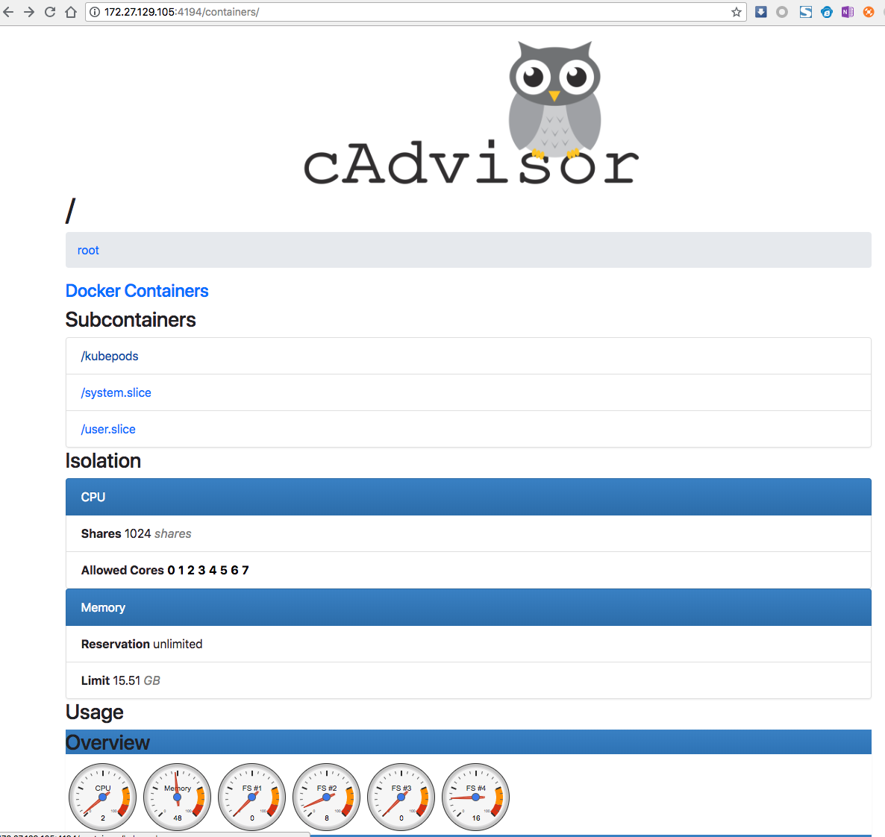
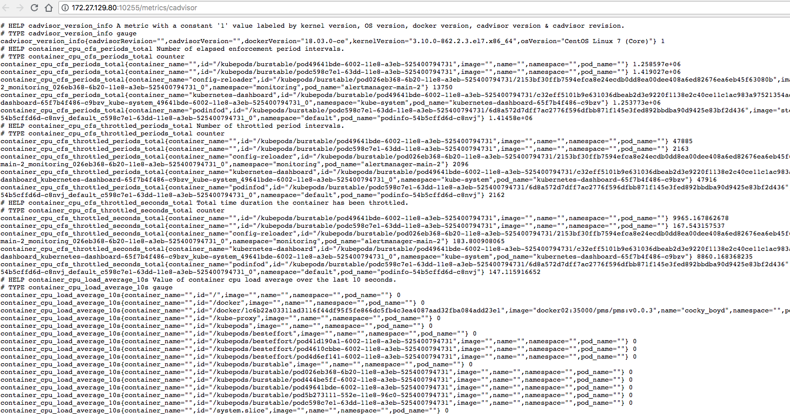

<!DOCTYPE HTML>
<html lang="zh-cn" >
    <head>
        <meta charset="UTF-8">
        <meta content="text/html; charset=utf-8" http-equiv="Content-Type">
        <title>07-2.kubelet · 和我一步步部署kubernetes集群</title>
        <meta http-equiv="X-UA-Compatible" content="IE=edge" />
        <meta name="description" content="">
        <meta name="generator" content="GitBook 3.2.3">
        
        
        
    
    <link rel="stylesheet" href="gitbook/style.css">

    
            
                
                <link rel="stylesheet" href="gitbook/gitbook-plugin-expandable-chapters/expandable-chapters.css">
                
            
                
                <link rel="stylesheet" href="gitbook/gitbook-plugin-anchors/plugin.css">
                
            
                
                <link rel="stylesheet" href="gitbook/gitbook-plugin-disqus/plugin.css">
                
            
                
                <link rel="stylesheet" href="gitbook/gitbook-plugin-prism/prism.css">
                
            
                
                <link rel="stylesheet" href="gitbook/gitbook-plugin-search-plus/search.css">
                
            
                
                <link rel="stylesheet" href="gitbook/gitbook-plugin-splitter/splitter.css">
                
            
                
                <link rel="stylesheet" href="gitbook/gitbook-plugin-page-toc-button/plugin.css">
                
            
                
                <link rel="stylesheet" href="gitbook/gitbook-plugin-image-captions/image-captions.css">
                
            
                
                <link rel="stylesheet" href="gitbook/gitbook-plugin-page-footer-ex/style/plugin.css">
                
            
                
                <link rel="stylesheet" href="gitbook/gitbook-plugin-tags/plugin.css">
                
            
                
                <link rel="stylesheet" href="gitbook/gitbook-plugin-multipart/multipart.css">
                
            
                
                <link rel="stylesheet" href="gitbook/gitbook-plugin-fontsettings/website.css">
                
            
        

    

    
        
    
        
    
        
    
        
    
        
    
        
    

        
    
    
    <meta name="HandheldFriendly" content="true"/>
    <meta name="viewport" content="width=device-width, initial-scale=1, user-scalable=no">
    <meta name="apple-mobile-web-app-capable" content="yes">
    <meta name="apple-mobile-web-app-status-bar-style" content="black">
    <link rel="apple-touch-icon-precomposed" sizes="152x152" href="gitbook/images/apple-touch-icon-precomposed-152.png">
    <link rel="shortcut icon" href="gitbook/images/favicon.ico" type="image/x-icon">

    
    <link rel="next" href="07-3.kube-proxy.html" />
    
    
    <link rel="prev" href="07-1.docker.html" />
    

    </head>
    <body>
        
<div class="book">
    <div class="book-summary">
        
            
<div id="book-search-input" role="search">
    <input type="text" placeholder="輸入並搜尋" />
</div>

            
                <nav role="navigation">
                


<ul class="summary">
    
    

    

    
        
        <li class="header">和我一步步部署 kubernetes 集群</li>
        
        
    
        <li class="chapter " data-level="1.1" data-path="./">
            
                <a href="./">
            
                    
                    Introduction
            
                </a>
            

            
        </li>
    
        <li class="chapter " data-level="1.2" data-path="00.组件版本和配置策略.html">
            
                <a href="00.组件版本和配置策略.html">
            
                    
                    00.组件版本和配置策略
            
                </a>
            

            
        </li>
    
        <li class="chapter " data-level="1.3" data-path="01.系统初始化和全局变量.html">
            
                <a href="01.系统初始化和全局变量.html">
            
                    
                    01.系统初始化和全局变量
            
                </a>
            

            
        </li>
    
        <li class="chapter " data-level="1.4" data-path="02.创建CA证书和秘钥.html">
            
                <a href="02.创建CA证书和秘钥.html">
            
                    
                    02.创建CA证书和秘钥
            
                </a>
            

            
        </li>
    
        <li class="chapter " data-level="1.5" data-path="03.部署kubectl命令行工具.html">
            
                <a href="03.部署kubectl命令行工具.html">
            
                    
                    03.部署kubectl命令行工具
            
                </a>
            

            
        </li>
    
        <li class="chapter " data-level="1.6" data-path="04.部署etcd集群.html">
            
                <a href="04.部署etcd集群.html">
            
                    
                    04.部署etcd集群
            
                </a>
            

            
        </li>
    
        <li class="chapter " data-level="1.7" data-path="05.部署flannel网络.html">
            
                <a href="05.部署flannel网络.html">
            
                    
                    05.部署flannel网络
            
                </a>
            

            
        </li>
    
        <li class="chapter " data-level="1.8" data-path="06-0.部署master节点.html">
            
                <a href="06-0.部署master节点.html">
            
                    
                    06.部署master节点
            
                </a>
            

            
            <ul class="articles">
                
    
        <li class="chapter " data-level="1.8.1" data-path="06-1.ha.html">
            
                <a href="06-1.ha.html">
            
                    
                    06-1.ha
            
                </a>
            

            
        </li>
    
        <li class="chapter " data-level="1.8.2" data-path="06-2.api-server.html">
            
                <a href="06-2.api-server.html">
            
                    
                    06-2.api-server
            
                </a>
            

            
        </li>
    
        <li class="chapter " data-level="1.8.3" data-path="06-3.controller-manager集群.html">
            
                <a href="06-3.controller-manager集群.html">
            
                    
                    06-3.controller-manager集群
            
                </a>
            

            
        </li>
    
        <li class="chapter " data-level="1.8.4" data-path="06-4.scheduler集群.html">
            
                <a href="06-4.scheduler集群.html">
            
                    
                    06-4.scheduler集群
            
                </a>
            

            
        </li>
    

            </ul>
            
        </li>
    
        <li class="chapter " data-level="1.9" data-path="07-0.部署worker节点.html">
            
                <a href="07-0.部署worker节点.html">
            
                    
                    07.部署worker节点
            
                </a>
            

            
            <ul class="articles">
                
    
        <li class="chapter " data-level="1.9.1" data-path="07-1.docker.html">
            
                <a href="07-1.docker.html">
            
                    
                    07-1.docker
            
                </a>
            

            
        </li>
    
        <li class="chapter active" data-level="1.9.2" data-path="07-2.kubelet.html">
            
                <a href="07-2.kubelet.html">
            
                    
                    07-2.kubelet
            
                </a>
            

            
        </li>
    
        <li class="chapter " data-level="1.9.3" data-path="07-3.kube-proxy.html">
            
                <a href="07-3.kube-proxy.html">
            
                    
                    07-3.kube-proxy
            
                </a>
            

            
        </li>
    

            </ul>
            
        </li>
    
        <li class="chapter " data-level="1.10" data-path="08.验证集群功能.html">
            
                <a href="08.验证集群功能.html">
            
                    
                    08.验证集群功能
            
                </a>
            

            
        </li>
    
        <li class="chapter " data-level="1.11" data-path="09-0.部署集群插件.html">
            
                <a href="09-0.部署集群插件.html">
            
                    
                    09.部署集群插件
            
                </a>
            

            
            <ul class="articles">
                
    
        <li class="chapter " data-level="1.11.1" data-path="09-1.dns插件.html">
            
                <a href="09-1.dns插件.html">
            
                    
                    09-1.dns插件
            
                </a>
            

            
        </li>
    
        <li class="chapter " data-level="1.11.2" data-path="09-2.dashboard插件.html">
            
                <a href="09-2.dashboard插件.html">
            
                    
                    09-2.dashboard插件
            
                </a>
            

            
        </li>
    
        <li class="chapter " data-level="1.11.3" data-path="09-3.heapster插件.html">
            
                <a href="09-3.heapster插件.html">
            
                    
                    09-3.heapster插件
            
                </a>
            

            
        </li>
    
        <li class="chapter " data-level="1.11.4" data-path="09-4.metrics-server插件.html">
            
                <a href="09-4.metrics-server插件.html">
            
                    
                    09-4.metrics-server插件
            
                </a>
            

            
        </li>
    
        <li class="chapter " data-level="1.11.5" data-path="09-5.EFK插件.html">
            
                <a href="09-5.EFK插件.html">
            
                    
                    09-5.EFK插件
            
                </a>
            

            
        </li>
    

            </ul>
            
        </li>
    
        <li class="chapter " data-level="1.12" data-path="10.部署Docker-Registry.html">
            
                <a href="10.部署Docker-Registry.html">
            
                    
                    10.部署Docker-Registry
            
                </a>
            

            
        </li>
    
        <li class="chapter " data-level="1.13" data-path="11.部署Harbor-Registry.html">
            
                <a href="11.部署Harbor-Registry.html">
            
                    
                    11.部署Harbor-Registry
            
                </a>
            

            
        </li>
    
        <li class="chapter " data-level="1.14" data-path="12.清理集群.html">
            
                <a href="12.清理集群.html">
            
                    
                    12.清理集群
            
                </a>
            

            
        </li>
    
        <li class="chapter " data-level="1.15" data-path="A.浏览器访问kube-apiserver安全端口.html">
            
                <a href="A.浏览器访问kube-apiserver安全端口.html">
            
                    
                    13.浏览器访问apiserver安全端口
            
                </a>
            

            
        </li>
    

    
        
        <li class="header">标签集合</li>
        
        
    
        <li class="chapter " data-level="2.1" data-path="tags.html">
            
                <a href="tags.html">
            
                    
                    标签
            
                </a>
            

            
        </li>
    

    

    <li class="divider"></li>

    <li>
        <a href="https://www.gitbook.com" target="blank" class="gitbook-link">
            本書使用 GitBook 釋出
        </a>
    </li>
</ul>


                </nav>
            
        
    </div>

    <div class="book-body">
        
            <div class="body-inner">
                
                    

<div class="book-header" role="navigation">
    

    <!-- Title -->
    <h1>
        <i class="fa fa-circle-o-notch fa-spin"></i>
        <a href="." >07-2.kubelet</a>
    </h1>
</div>


                    <div class="page-wrapper" tabindex="-1" role="main">
                        <div class="page-inner">
                            
<div class="search-plus" id="book-search-results">
    <div class="search-noresults">
    
                                <section class="normal markdown-section">
                                
                                <!-- toc -->
<h1 id="07-2&#x90E8;&#x7F72;-kubelet-&#x7EC4;&#x4EF6;"><a name="07-2&#x90E8;&#x7F72;-kubelet-&#x7EC4;&#x4EF6;" class="plugin-anchor" href="#07-2&#x90E8;&#x7F72;-kubelet-&#x7EC4;&#x4EF6;"><i class="fa fa-link" aria-hidden="true"></i></a>07-2.&#x90E8;&#x7F72; kubelet &#x7EC4;&#x4EF6;</h1>
<p>kublet &#x8FD0;&#x884C;&#x5728;&#x6BCF;&#x4E2A; worker &#x8282;&#x70B9;&#x4E0A;&#xFF0C;&#x63A5;&#x6536; kube-apiserver &#x53D1;&#x9001;&#x7684;&#x8BF7;&#x6C42;&#xFF0C;&#x7BA1;&#x7406; Pod &#x5BB9;&#x5668;&#xFF0C;&#x6267;&#x884C;&#x4EA4;&#x4E92;&#x5F0F;&#x547D;&#x4EE4;&#xFF0C;&#x5982; exec&#x3001;run&#x3001;logs &#x7B49;&#x3002;</p>
<p>kublet &#x542F;&#x52A8;&#x65F6;&#x81EA;&#x52A8;&#x5411; kube-apiserver &#x6CE8;&#x518C;&#x8282;&#x70B9;&#x4FE1;&#x606F;&#xFF0C;&#x5185;&#x7F6E;&#x7684; cadvisor &#x7EDF;&#x8BA1;&#x548C;&#x76D1;&#x63A7;&#x8282;&#x70B9;&#x7684;&#x8D44;&#x6E90;&#x4F7F;&#x7528;&#x60C5;&#x51B5;&#x3002;</p>
<p>&#x4E3A;&#x786E;&#x4FDD;&#x5B89;&#x5168;&#xFF0C;&#x672C;&#x6587;&#x6863;&#x53EA;&#x5F00;&#x542F;&#x63A5;&#x6536; https &#x8BF7;&#x6C42;&#x7684;&#x5B89;&#x5168;&#x7AEF;&#x53E3;&#xFF0C;&#x5BF9;&#x8BF7;&#x6C42;&#x8FDB;&#x884C;&#x8BA4;&#x8BC1;&#x548C;&#x6388;&#x6743;&#xFF0C;&#x62D2;&#x7EDD;&#x672A;&#x6388;&#x6743;&#x7684;&#x8BBF;&#x95EE;(&#x5982; apiserver&#x3001;heapster)&#x3002;</p>
<h2 id="&#x4E0B;&#x8F7D;&#x548C;&#x5206;&#x53D1;-kubelet-&#x4E8C;&#x8FDB;&#x5236;&#x6587;&#x4EF6;"><a name="&#x4E0B;&#x8F7D;&#x548C;&#x5206;&#x53D1;-kubelet-&#x4E8C;&#x8FDB;&#x5236;&#x6587;&#x4EF6;" class="plugin-anchor" href="#&#x4E0B;&#x8F7D;&#x548C;&#x5206;&#x53D1;-kubelet-&#x4E8C;&#x8FDB;&#x5236;&#x6587;&#x4EF6;"><i class="fa fa-link" aria-hidden="true"></i></a>&#x4E0B;&#x8F7D;&#x548C;&#x5206;&#x53D1; kubelet &#x4E8C;&#x8FDB;&#x5236;&#x6587;&#x4EF6;</h2>
<p>&#x53C2;&#x8003; <a href="06-0.&#x90E8;&#x7F72;master&#x8282;&#x70B9;.html">06-0.&#x90E8;&#x7F72;master&#x8282;&#x70B9;.md</a></p>
<h2 id="&#x5B89;&#x88C5;&#x4F9D;&#x8D56;&#x5305;"><a name="&#x5B89;&#x88C5;&#x4F9D;&#x8D56;&#x5305;" class="plugin-anchor" href="#&#x5B89;&#x88C5;&#x4F9D;&#x8D56;&#x5305;"><i class="fa fa-link" aria-hidden="true"></i></a>&#x5B89;&#x88C5;&#x4F9D;&#x8D56;&#x5305;</h2>
<p>&#x53C2;&#x8003; <a href="07-0.&#x90E8;&#x7F72;worker&#x8282;&#x70B9;.html">07-0.&#x90E8;&#x7F72;worker&#x8282;&#x70B9;.md</a></p>
<h2 id="&#x521B;&#x5EFA;-kubelet-bootstrap-kubeconfig-&#x6587;&#x4EF6;"><a name="&#x521B;&#x5EFA;-kubelet-bootstrap-kubeconfig-&#x6587;&#x4EF6;" class="plugin-anchor" href="#&#x521B;&#x5EFA;-kubelet-bootstrap-kubeconfig-&#x6587;&#x4EF6;"><i class="fa fa-link" aria-hidden="true"></i></a>&#x521B;&#x5EFA; kubelet bootstrap kubeconfig &#x6587;&#x4EF6;</h2>
<pre class="language-"><code class="lang-bash"><span class="token function">source</span> /opt/k8s/bin/environment.sh
<span class="token keyword">for</span> node_name <span class="token keyword">in</span> <span class="token variable">${NODE_NAMES[@]}</span>
  <span class="token keyword">do</span>
    <span class="token keyword">echo</span> <span class="token string">&quot;&gt;&gt;&gt; <span class="token variable">${node_name}</span>&quot;</span>

    <span class="token comment" spellcheck="true"># &#x521B;&#x5EFA; token</span>
    <span class="token function">export</span> BOOTSTRAP_TOKEN<span class="token operator">=</span><span class="token variable"><span class="token variable">$(</span>kubeadm token create \
      --description kubelet-bootstrap-token \
      --groups system:bootstrappers:$<span class="token punctuation">{</span>node_name<span class="token punctuation">}</span> \
      --kubeconfig ~/.kube/config<span class="token variable">)</span></span>

    <span class="token comment" spellcheck="true"># &#x8BBE;&#x7F6E;&#x96C6;&#x7FA4;&#x53C2;&#x6570;</span>
    kubectl config set-cluster kubernetes \
      --certificate-authority<span class="token operator">=</span>/etc/kubernetes/cert/ca.pem \
      --embed-certs<span class="token operator">=</span>true \
      --server<span class="token operator">=</span><span class="token variable">${KUBE_APISERVER}</span> \
      --kubeconfig<span class="token operator">=</span>kubelet-bootstrap-<span class="token variable">${node_name}</span>.kubeconfig

    <span class="token comment" spellcheck="true"># &#x8BBE;&#x7F6E;&#x5BA2;&#x6237;&#x7AEF;&#x8BA4;&#x8BC1;&#x53C2;&#x6570;</span>
    kubectl config set-credentials kubelet-bootstrap \
      --token<span class="token operator">=</span><span class="token variable">${BOOTSTRAP_TOKEN}</span> \
      --kubeconfig<span class="token operator">=</span>kubelet-bootstrap-<span class="token variable">${node_name}</span>.kubeconfig

    <span class="token comment" spellcheck="true"># &#x8BBE;&#x7F6E;&#x4E0A;&#x4E0B;&#x6587;&#x53C2;&#x6570;</span>
    kubectl config set-context default \
      --cluster<span class="token operator">=</span>kubernetes \
      --user<span class="token operator">=</span>kubelet-bootstrap \
      --kubeconfig<span class="token operator">=</span>kubelet-bootstrap-<span class="token variable">${node_name}</span>.kubeconfig

    <span class="token comment" spellcheck="true"># &#x8BBE;&#x7F6E;&#x9ED8;&#x8BA4;&#x4E0A;&#x4E0B;&#x6587;</span>
    kubectl config use-context default --kubeconfig<span class="token operator">=</span>kubelet-bootstrap-<span class="token variable">${node_name}</span>.kubeconfig
  <span class="token keyword">done</span>
</code></pre>
<ul>
<li>&#x8BC1;&#x4E66;&#x4E2D;&#x5199;&#x5165; Token &#x800C;&#x975E;&#x8BC1;&#x4E66;&#xFF0C;&#x8BC1;&#x4E66;&#x540E;&#x7EED;&#x7531; controller-manager &#x521B;&#x5EFA;&#x3002;</li>
</ul>
<p>&#x67E5;&#x770B; kubeadm &#x4E3A;&#x5404;&#x8282;&#x70B9;&#x521B;&#x5EFA;&#x7684; token&#xFF1A;</p>
<pre class="language-"><code class="lang-bash">$ kubeadm token list --kubeconfig ~/.kube/config
TOKEN                     TTL       EXPIRES                     USAGES                   DESCRIPTION               EXTRA GROUPS
k0s2bj.7nvw1zi1nalyz4gz   23h       2018-06-14T15:14:31+08:00   authentication,signing   kubelet-bootstrap-token   system:bootstrappers:kube-node1
mkus5s.vilnjk3kutei600l   23h       2018-06-14T15:14:32+08:00   authentication,signing   kubelet-bootstrap-token   system:bootstrappers:kube-node3
zkiem5.0m4xhw0jc8r466nk   23h       2018-06-14T15:14:32+08:00   authentication,signing   kubelet-bootstrap-token   system:bootstrappers:kube-node2
</code></pre>
<ul>
<li>&#x521B;&#x5EFA;&#x7684; token &#x6709;&#x6548;&#x671F;&#x4E3A; 1 &#x5929;&#xFF0C;&#x8D85;&#x671F;&#x540E;&#x5C06;&#x4E0D;&#x80FD;&#x518D;&#x88AB;&#x4F7F;&#x7528;&#xFF0C;&#x4E14;&#x4F1A;&#x88AB; kube-controller-manager &#x7684; tokencleaner &#x6E05;&#x7406;(&#x5982;&#x679C;&#x542F;&#x7528;&#x8BE5; controller &#x7684;&#x8BDD;)&#xFF1B;</li>
<li>kube-apiserver &#x63A5;&#x6536; kubelet &#x7684; bootstrap token &#x540E;&#xFF0C;&#x5C06;&#x8BF7;&#x6C42;&#x7684; user &#x8BBE;&#x7F6E;&#x4E3A; system:bootstrap:<token id="">&#xFF0C;group &#x8BBE;&#x7F6E;&#x4E3A; system:bootstrappers&#xFF1B;</token></li>
</ul>
<p>&#x5404; token &#x5173;&#x8054;&#x7684; Secret&#xFF1A;</p>
<pre class="language-"><code class="lang-bash">$ kubectl get secrets  -n kube-system
NAME                     TYPE                                  DATA      AGE
bootstrap-token-k0s2bj   bootstrap.kubernetes.io/token         7         1m
bootstrap-token-mkus5s   bootstrap.kubernetes.io/token         7         1m
bootstrap-token-zkiem5   bootstrap.kubernetes.io/token         7         1m
default-token-99st7      kubernetes.io/service-account-token   3         2d
</code></pre>
<h2 id="&#x5206;&#x53D1;-bootstrap-kubeconfig-&#x6587;&#x4EF6;&#x5230;&#x6240;&#x6709;-worker-&#x8282;&#x70B9;"><a name="&#x5206;&#x53D1;-bootstrap-kubeconfig-&#x6587;&#x4EF6;&#x5230;&#x6240;&#x6709;-worker-&#x8282;&#x70B9;" class="plugin-anchor" href="#&#x5206;&#x53D1;-bootstrap-kubeconfig-&#x6587;&#x4EF6;&#x5230;&#x6240;&#x6709;-worker-&#x8282;&#x70B9;"><i class="fa fa-link" aria-hidden="true"></i></a>&#x5206;&#x53D1; bootstrap kubeconfig &#x6587;&#x4EF6;&#x5230;&#x6240;&#x6709; worker &#x8282;&#x70B9;</h2>
<pre class="language-"><code class="lang-bash"><span class="token function">source</span> /opt/k8s/bin/environment.sh
<span class="token keyword">for</span> node_name <span class="token keyword">in</span> <span class="token variable">${NODE_NAMES[@]}</span>
  <span class="token keyword">do</span>
    <span class="token keyword">echo</span> <span class="token string">&quot;&gt;&gt;&gt; <span class="token variable">${node_ip}</span>&quot;</span>
    <span class="token function">scp</span> kubelet-bootstrap-<span class="token variable">${node_name}</span>.kubeconfig k8s@<span class="token variable">${node_name}</span>:/etc/kubernetes/kubelet-bootstrap.kubeconfig
  <span class="token keyword">done</span>
</code></pre>
<h2 id="&#x521B;&#x5EFA;&#x548C;&#x5206;&#x53D1;-kubelet-&#x53C2;&#x6570;&#x914D;&#x7F6E;&#x6587;&#x4EF6;"><a name="&#x521B;&#x5EFA;&#x548C;&#x5206;&#x53D1;-kubelet-&#x53C2;&#x6570;&#x914D;&#x7F6E;&#x6587;&#x4EF6;" class="plugin-anchor" href="#&#x521B;&#x5EFA;&#x548C;&#x5206;&#x53D1;-kubelet-&#x53C2;&#x6570;&#x914D;&#x7F6E;&#x6587;&#x4EF6;"><i class="fa fa-link" aria-hidden="true"></i></a>&#x521B;&#x5EFA;&#x548C;&#x5206;&#x53D1; kubelet &#x53C2;&#x6570;&#x914D;&#x7F6E;&#x6587;&#x4EF6;</h2>
<p>&#x4ECE; v1.10 &#x5F00;&#x59CB;&#xFF0C;kubelet <strong>&#x90E8;&#x5206;&#x53C2;&#x6570;</strong>&#x9700;&#x5728;&#x914D;&#x7F6E;&#x6587;&#x4EF6;&#x4E2D;&#x914D;&#x7F6E;&#xFF0C;<code>kubelet --help</code> &#x4F1A;&#x63D0;&#x793A;&#xFF1A;</p>
<pre class="language-"><code>DEPRECATED: This parameter should be set via the config file specified by the Kubelet&apos;s --config flag
</code></pre><p>&#x521B;&#x5EFA; kubelet &#x53C2;&#x6570;&#x914D;&#x7F6E;&#x6A21;&#x677F;&#x6587;&#x4EF6;&#xFF1A;</p>
<pre class="language-"><code class="lang-bash"><span class="token function">source</span> /opt/k8s/bin/environment.sh
<span class="token function">cat</span> <span class="token operator">&gt;</span> kubelet.config.json.template <span class="token operator">&lt;&lt;</span><span class="token string">EOF
{
  &quot;kind&quot;: &quot;KubeletConfiguration&quot;,
  &quot;apiVersion&quot;: &quot;kubelet.config.k8s.io/v1beta1&quot;,
  &quot;authentication&quot;: {
    &quot;x509&quot;: {
      &quot;clientCAFile&quot;: &quot;/etc/kubernetes/cert/ca.pem&quot;
    },
    &quot;webhook&quot;: {
      &quot;enabled&quot;: true,
      &quot;cacheTTL&quot;: &quot;2m0s&quot;
    },
    &quot;anonymous&quot;: {
      &quot;enabled&quot;: false
    }
  },
  &quot;authorization&quot;: {
    &quot;mode&quot;: &quot;Webhook&quot;,
    &quot;webhook&quot;: {
      &quot;cacheAuthorizedTTL&quot;: &quot;5m0s&quot;,
      &quot;cacheUnauthorizedTTL&quot;: &quot;30s&quot;
    }
  },
  &quot;address&quot;: &quot;##NODE_IP##&quot;,
  &quot;port&quot;: 10250,
  &quot;readOnlyPort&quot;: 0,
  &quot;cgroupDriver&quot;: &quot;cgroupfs&quot;,
  &quot;hairpinMode&quot;: &quot;promiscuous-bridge&quot;,
  &quot;serializeImagePulls&quot;: false,
  &quot;featureGates&quot;: {
    &quot;RotateKubeletClientCertificate&quot;: true,
    &quot;RotateKubeletServerCertificate&quot;: true
  },
  &quot;clusterDomain&quot;: &quot;<span class="token variable">${CLUSTER_DNS_DOMAIN}</span>&quot;,
  &quot;clusterDNS&quot;: [&quot;<span class="token variable">${CLUSTER_DNS_SVC_IP}</span>&quot;]
}
EOF</span>
</code></pre>
<ul>
<li>address&#xFF1A;API &#x76D1;&#x542C;&#x5730;&#x5740;&#xFF0C;&#x4E0D;&#x80FD;&#x4E3A; 127.0.0.1&#xFF0C;&#x5426;&#x5219; kube-apiserver&#x3001;heapster &#x7B49;&#x4E0D;&#x80FD;&#x8C03;&#x7528; kubelet &#x7684; API&#xFF1B;</li>
<li>readOnlyPort=0&#xFF1A;&#x5173;&#x95ED;&#x53EA;&#x8BFB;&#x7AEF;&#x53E3;(&#x9ED8;&#x8BA4; 10255)&#xFF0C;&#x7B49;&#x6548;&#x4E3A;&#x672A;&#x6307;&#x5B9A;&#xFF1B;</li>
<li>authentication.anonymous.enabled&#xFF1A;&#x8BBE;&#x7F6E;&#x4E3A; false&#xFF0C;&#x4E0D;&#x5141;&#x8BB8;&#x533F;&#x540D;&#x8BBF;&#x95EE; 10250 &#x7AEF;&#x53E3;&#xFF1B;</li>
<li>authentication.x509.clientCAFile&#xFF1A;&#x6307;&#x5B9A;&#x7B7E;&#x540D;&#x5BA2;&#x6237;&#x7AEF;&#x8BC1;&#x4E66;&#x7684; CA &#x8BC1;&#x4E66;&#xFF0C;&#x5F00;&#x542F; HTTP &#x8BC1;&#x4E66;&#x8BA4;&#x8BC1;&#xFF1B;</li>
<li>authentication.webhook.enabled=true&#xFF1A;&#x5F00;&#x542F; HTTPs bearer token &#x8BA4;&#x8BC1;&#xFF1B;</li>
<li>&#x5BF9;&#x4E8E;&#x672A;&#x901A;&#x8FC7; x509 &#x8BC1;&#x4E66;&#x548C; webhook &#x8BA4;&#x8BC1;&#x7684;&#x8BF7;&#x6C42;(kube-apiserver &#x6216;&#x5176;&#x4ED6;&#x5BA2;&#x6237;&#x7AEF;)&#xFF0C;&#x5C06;&#x88AB;&#x62D2;&#x7EDD;&#xFF0C;&#x63D0;&#x793A; Unauthorized&#xFF1B;</li>
<li>authroization.mode=Webhook&#xFF1A;kubelet &#x4F7F;&#x7528; SubjectAccessReview API &#x67E5;&#x8BE2; kube-apiserver &#x67D0; user&#x3001;group &#x662F;&#x5426;&#x5177;&#x6709;&#x64CD;&#x4F5C;&#x8D44;&#x6E90;&#x7684;&#x6743;&#x9650;(RBAC)&#xFF1B;</li>
<li>featureGates.RotateKubeletClientCertificate&#x3001;featureGates.RotateKubeletServerCertificate&#xFF1A;&#x81EA;&#x52A8; rotate &#x8BC1;&#x4E66;&#xFF0C;&#x8BC1;&#x4E66;&#x7684;&#x6709;&#x6548;&#x671F;&#x53D6;&#x51B3;&#x4E8E; kube-controller-manager &#x7684; --experimental-cluster-signing-duration &#x53C2;&#x6570;&#xFF1B;</li>
<li>&#x9700;&#x8981; root &#x8D26;&#x6237;&#x8FD0;&#x884C;&#xFF1B;</li>
</ul>
<p>&#x4E3A;&#x5404;&#x8282;&#x70B9;&#x521B;&#x5EFA;&#x548C;&#x5206;&#x53D1; kubelet &#x914D;&#x7F6E;&#x6587;&#x4EF6;&#xFF1A;</p>
<pre class="language-"><code class="lang-bash"><span class="token function">source</span> /opt/k8s/bin/environment.sh
<span class="token keyword">for</span> node_ip <span class="token keyword">in</span> <span class="token variable">${NODE_IPS[@]}</span>
  <span class="token keyword">do</span> 
    <span class="token keyword">echo</span> <span class="token string">&quot;&gt;&gt;&gt; <span class="token variable">${node_ip}</span>&quot;</span>
    <span class="token function">sed</span> -e <span class="token string">&quot;s/##NODE_IP##/<span class="token variable">${node_ip}</span>/&quot;</span> kubelet.config.json.template <span class="token operator">&gt;</span> kubelet.config-<span class="token variable">${node_ip}</span>.json
    <span class="token function">scp</span> kubelet.config-<span class="token variable">${node_ip}</span>.json root@<span class="token variable">${node_ip}</span>:/etc/kubernetes/kubelet.config.json
  <span class="token keyword">done</span>
</code></pre>
<p>&#x66FF;&#x6362;&#x540E;&#x7684; kubelet.config.json &#x6587;&#x4EF6;&#xFF1A; <a href="https://github.com/opsnull/follow-me-install-kubernetes-cluster/blob/master/systemd/kubelet.config.json" target="_blank">kubelet.config.json</a></p>
<h2 id="&#x521B;&#x5EFA;&#x548C;&#x5206;&#x53D1;-kubelet-systemd-unit-&#x6587;&#x4EF6;"><a name="&#x521B;&#x5EFA;&#x548C;&#x5206;&#x53D1;-kubelet-systemd-unit-&#x6587;&#x4EF6;" class="plugin-anchor" href="#&#x521B;&#x5EFA;&#x548C;&#x5206;&#x53D1;-kubelet-systemd-unit-&#x6587;&#x4EF6;"><i class="fa fa-link" aria-hidden="true"></i></a>&#x521B;&#x5EFA;&#x548C;&#x5206;&#x53D1; kubelet systemd unit &#x6587;&#x4EF6;</h2>
<p>&#x521B;&#x5EFA; kubelet systemd unit &#x6587;&#x4EF6;&#x6A21;&#x677F;&#xFF1A;</p>
<pre class="language-"><code class="lang-bash"><span class="token function">cat</span> <span class="token operator">&gt;</span> kubelet.service.template <span class="token operator">&lt;&lt;</span><span class="token string">EOF
[Unit]
Description=Kubernetes Kubelet
Documentation=https://github.com/GoogleCloudPlatform/kubernetes
After=docker.service
Requires=docker.service

[Service]
WorkingDirectory=/var/lib/kubelet
ExecStart=/opt/k8s/bin/kubelet \\
  --bootstrap-kubeconfig=/etc/kubernetes/kubelet-bootstrap.kubeconfig \\
  --cert-dir=/etc/kubernetes/cert \\
  --kubeconfig=/etc/kubernetes/kubelet.kubeconfig \\
  --config=/etc/kubernetes/kubelet.config.json \\
  --hostname-override=##NODE_NAME## \\
  --pod-infra-container-image=registry.access.redhat.com/rhel7/pod-infrastructure:latest \\
  --allow-privileged=true \\
  --alsologtostderr=true \\
  --logtostderr=false \\
  --log-dir=/var/log/kubernetes \\
  --v=2
Restart=on-failure
RestartSec=5

[Install]
WantedBy=multi-user.target
EOF</span>
</code></pre>
<ul>
<li>&#x5982;&#x679C;&#x8BBE;&#x7F6E;&#x4E86; <code>--hostname-override</code> &#x9009;&#x9879;&#xFF0C;&#x5219; <code>kube-proxy</code> &#x4E5F;&#x9700;&#x8981;&#x8BBE;&#x7F6E;&#x8BE5;&#x9009;&#x9879;&#xFF0C;&#x5426;&#x5219;&#x4F1A;&#x51FA;&#x73B0;&#x627E;&#x4E0D;&#x5230; Node &#x7684;&#x60C5;&#x51B5;&#xFF1B;</li>
<li><code>--bootstrap-kubeconfig</code>&#xFF1A;&#x6307;&#x5411; bootstrap kubeconfig &#x6587;&#x4EF6;&#xFF0C;kubelet &#x4F7F;&#x7528;&#x8BE5;&#x6587;&#x4EF6;&#x4E2D;&#x7684;&#x7528;&#x6237;&#x540D;&#x548C; token &#x5411; kube-apiserver &#x53D1;&#x9001; TLS Bootstrapping &#x8BF7;&#x6C42;&#xFF1B;</li>
<li>K8S approve kubelet &#x7684; csr &#x8BF7;&#x6C42;&#x540E;&#xFF0C;&#x5728; <code>--cert-dir</code> &#x76EE;&#x5F55;&#x521B;&#x5EFA;&#x8BC1;&#x4E66;&#x548C;&#x79C1;&#x94A5;&#x6587;&#x4EF6;&#xFF0C;&#x7136;&#x540E;&#x5199;&#x5165; <code>--kubeconfig</code> &#x6587;&#x4EF6;&#xFF1B;</li>
</ul>
<p>&#x66FF;&#x6362;&#x540E;&#x7684; unit &#x6587;&#x4EF6;&#xFF1A;<a href="https://github.com/opsnull/follow-me-install-kubernetes-cluster/blob/master/systemd/kubelet.service" target="_blank">kubelet.service</a></p>
<p>&#x4E3A;&#x5404;&#x8282;&#x70B9;&#x521B;&#x5EFA;&#x548C;&#x5206;&#x53D1; kubelet systemd unit &#x6587;&#x4EF6;&#xFF1A;</p>
<pre class="language-"><code class="lang-bash"><span class="token function">source</span> /opt/k8s/bin/environment.sh
<span class="token keyword">for</span> node_name <span class="token keyword">in</span> <span class="token variable">${NODE_NAMES[@]}</span>
  <span class="token keyword">do</span> 
    <span class="token keyword">echo</span> <span class="token string">&quot;&gt;&gt;&gt; <span class="token variable">${node_name}</span>&quot;</span>
    <span class="token function">sed</span> -e <span class="token string">&quot;s/##NODE_NAME##/<span class="token variable">${node_name}</span>/&quot;</span> kubelet.service.template <span class="token operator">&gt;</span> kubelet-<span class="token variable">${node_name}</span>.service
    <span class="token function">scp</span> kubelet-<span class="token variable">${node_name}</span>.service root@<span class="token variable">${node_name}</span>:/etc/systemd/system/kubelet.service
  <span class="token keyword">done</span>
</code></pre>
<h2 id="bootstrap-token-auth-&#x548C;&#x6388;&#x4E88;&#x6743;&#x9650;"><a name="bootstrap-token-auth-&#x548C;&#x6388;&#x4E88;&#x6743;&#x9650;" class="plugin-anchor" href="#bootstrap-token-auth-&#x548C;&#x6388;&#x4E88;&#x6743;&#x9650;"><i class="fa fa-link" aria-hidden="true"></i></a>Bootstrap Token Auth &#x548C;&#x6388;&#x4E88;&#x6743;&#x9650;</h2>
<p>kublet &#x542F;&#x52A8;&#x65F6;&#x67E5;&#x627E;&#x914D;&#x7F6E;&#x7684; --kubeletconfig &#x6587;&#x4EF6;&#x662F;&#x5426;&#x5B58;&#x5728;&#xFF0C;&#x5982;&#x679C;&#x4E0D;&#x5B58;&#x5728;&#x5219;&#x4F7F;&#x7528; --bootstrap-kubeconfig &#x5411; kube-apiserver &#x53D1;&#x9001;&#x8BC1;&#x4E66;&#x7B7E;&#x540D;&#x8BF7;&#x6C42; (CSR)&#x3002;</p>
<p>kube-apiserver &#x6536;&#x5230; CSR &#x8BF7;&#x6C42;&#x540E;&#xFF0C;&#x5BF9;&#x5176;&#x4E2D;&#x7684; Token &#x8FDB;&#x884C;&#x8BA4;&#x8BC1;&#xFF08;&#x4E8B;&#x5148;&#x4F7F;&#x7528; kubeadm &#x521B;&#x5EFA;&#x7684; token&#xFF09;&#xFF0C;&#x8BA4;&#x8BC1;&#x901A;&#x8FC7;&#x540E;&#x5C06;&#x8BF7;&#x6C42;&#x7684; user &#x8BBE;&#x7F6E;&#x4E3A; system:bootstrap:<token id="">&#xFF0C;group &#x8BBE;&#x7F6E;&#x4E3A; system:bootstrappers&#xFF0C;&#x8FD9;&#x4E00;&#x8FC7;&#x7A0B;&#x79F0;&#x4E3A; Bootstrap Token Auth&#x3002;</token></p>
<p>&#x9ED8;&#x8BA4;&#x60C5;&#x51B5;&#x4E0B;&#xFF0C;&#x8FD9;&#x4E2A; user &#x548C; group &#x6CA1;&#x6709;&#x521B;&#x5EFA; CSR &#x7684;&#x6743;&#x9650;&#xFF0C;kubelet &#x542F;&#x52A8;&#x5931;&#x8D25;&#xFF0C;&#x9519;&#x8BEF;&#x65E5;&#x5FD7;&#x5982;&#x4E0B;&#xFF1A;</p>
<pre class="language-"><code class="lang-bash">$ <span class="token function">sudo</span> journalctl -u kubelet -a <span class="token operator">|</span><span class="token function">grep</span> -A 2 <span class="token string">&apos;certificatesigningrequests&apos;</span>
May 06 06:42:36 kube-node1 kubelet<span class="token punctuation">[</span>26986<span class="token punctuation">]</span>: F0506 06:42:36.314378   26986 server.go:233<span class="token punctuation">]</span> failed to run Kubelet: cannot create certificate signing request: certificatesigningrequests.certificates.k8s.io is forbidden: User <span class="token string">&quot;system:bootstrap:lemy40&quot;</span> cannot create certificatesigningrequests.certificates.k8s.io at the cluster scope
May 06 06:42:36 kube-node1 systemd<span class="token punctuation">[</span>1<span class="token punctuation">]</span>: kubelet.service: Main process exited, code<span class="token operator">=</span>exited, status<span class="token operator">=</span>255/n/a
May 06 06:42:36 kube-node1 systemd<span class="token punctuation">[</span>1<span class="token punctuation">]</span>: kubelet.service: Failed with result <span class="token string">&apos;exit-code&apos;</span><span class="token keyword">.</span>
</code></pre>
<p>&#x89E3;&#x51B3;&#x529E;&#x6CD5;&#x662F;&#xFF1A;&#x521B;&#x5EFA;&#x4E00;&#x4E2A; clusterrolebinding&#xFF0C;&#x5C06; group system:bootstrappers &#x548C; clusterrole system:node-bootstrapper &#x7ED1;&#x5B9A;&#xFF1A;</p>
<pre class="language-"><code class="lang-bash">$ kubectl create clusterrolebinding kubelet-bootstrap --clusterrole<span class="token operator">=</span>system:node-bootstrapper --group<span class="token operator">=</span>system:bootstrappers
</code></pre>
<h2 id="&#x542F;&#x52A8;-kubelet-&#x670D;&#x52A1;"><a name="&#x542F;&#x52A8;-kubelet-&#x670D;&#x52A1;" class="plugin-anchor" href="#&#x542F;&#x52A8;-kubelet-&#x670D;&#x52A1;"><i class="fa fa-link" aria-hidden="true"></i></a>&#x542F;&#x52A8; kubelet &#x670D;&#x52A1;</h2>
<pre class="language-"><code class="lang-bash"><span class="token function">source</span> /opt/k8s/bin/environment.sh
<span class="token keyword">for</span> node_ip <span class="token keyword">in</span> <span class="token variable">${NODE_IPS[@]}</span>
  <span class="token keyword">do</span>
    <span class="token keyword">echo</span> <span class="token string">&quot;&gt;&gt;&gt; <span class="token variable">${node_ip}</span>&quot;</span>
    <span class="token function">ssh</span> root@<span class="token variable">${node_ip}</span> <span class="token string">&quot;mkdir -p /var/lib/kubelet&quot;</span>
    <span class="token function">ssh</span> root@<span class="token variable">${node_ip}</span> <span class="token string">&quot;swapoff -a&quot;</span>
    <span class="token function">ssh</span> root@<span class="token variable">${node_ip}</span> <span class="token string">&quot;mkdir -p /var/log/kubernetes &amp;&amp; chown -R k8s /var/log/kubernetes&quot;</span>
    <span class="token function">ssh</span> root@<span class="token variable">${node_ip}</span> <span class="token string">&quot;systemctl daemon-reload &amp;&amp; systemctl enable kubelet &amp;&amp; systemctl restart kubelet&quot;</span>
  <span class="token keyword">done</span>
</code></pre>
<ul>
<li>&#x5173;&#x95ED; swap &#x5206;&#x533A;&#xFF0C;&#x5426;&#x5219; kubelet &#x4F1A;&#x542F;&#x52A8;&#x5931;&#x8D25;&#xFF1B;</li>
<li>&#x5FC5;&#x987B;&#x5148;&#x521B;&#x5EFA;&#x5DE5;&#x4F5C;&#x548C;&#x65E5;&#x5FD7;&#x76EE;&#x5F55;&#xFF1B;</li>
</ul>
<pre class="language-"><code class="lang-bash">$ journalctl -u kubelet <span class="token operator">|</span><span class="token function">tail</span>
Jun 13 16:05:40 kube-node2 kubelet<span class="token punctuation">[</span>22343<span class="token punctuation">]</span>: I0613 16:05:40.388242   22343 feature_gate.go:226<span class="token punctuation">]</span> feature gates: <span class="token operator">&amp;</span><span class="token punctuation">{</span><span class="token punctuation">{</span><span class="token punctuation">}</span> map<span class="token punctuation">[</span>RotateKubeletServerCertificate:true RotateKubeletClientCertificate:true<span class="token punctuation">]</span><span class="token punctuation">}</span>
Jun 13 16:05:40 kube-node2 kubelet<span class="token punctuation">[</span>22343<span class="token punctuation">]</span>: I0613 16:05:40.394342   22343 mount_linux.go:211<span class="token punctuation">]</span> Detected OS with systemd
Jun 13 16:05:40 kube-node2 kubelet<span class="token punctuation">[</span>22343<span class="token punctuation">]</span>: W0613 16:05:40.394494   22343 cni.go:171<span class="token punctuation">]</span> Unable to update cni config: No networks found <span class="token keyword">in</span> /etc/cni/net.d
Jun 13 16:05:40 kube-node2 kubelet<span class="token punctuation">[</span>22343<span class="token punctuation">]</span>: I0613 16:05:40.399508   22343 server.go:376<span class="token punctuation">]</span> Version: v1.10.4
Jun 13 16:05:40 kube-node2 kubelet<span class="token punctuation">[</span>22343<span class="token punctuation">]</span>: I0613 16:05:40.399583   22343 feature_gate.go:226<span class="token punctuation">]</span> feature gates: <span class="token operator">&amp;</span><span class="token punctuation">{</span><span class="token punctuation">{</span><span class="token punctuation">}</span> map<span class="token punctuation">[</span>RotateKubeletServerCertificate:true RotateKubeletClientCertificate:true<span class="token punctuation">]</span><span class="token punctuation">}</span>
Jun 13 16:05:40 kube-node2 kubelet<span class="token punctuation">[</span>22343<span class="token punctuation">]</span>: I0613 16:05:40.399736   22343 plugins.go:89<span class="token punctuation">]</span> No cloud provider specified.
Jun 13 16:05:40 kube-node2 kubelet<span class="token punctuation">[</span>22343<span class="token punctuation">]</span>: I0613 16:05:40.399752   22343 server.go:492<span class="token punctuation">]</span> No cloud provider specified: <span class="token string">&quot;&quot;</span> from the config file: <span class="token string">&quot;&quot;</span>
Jun 13 16:05:40 kube-node2 kubelet<span class="token punctuation">[</span>22343<span class="token punctuation">]</span>: I0613 16:05:40.399777   22343 bootstrap.go:58<span class="token punctuation">]</span> Using bootstrap kubeconfig to generate TLS client cert, key and kubeconfig <span class="token function">file</span>
Jun 13 16:05:40 kube-node2 kubelet<span class="token punctuation">[</span>22343<span class="token punctuation">]</span>: I0613 16:05:40.446068   22343 csr.go:105<span class="token punctuation">]</span> csr <span class="token keyword">for</span> this node already exists, reusing
Jun 13 16:05:40 kube-node2 kubelet<span class="token punctuation">[</span>22343<span class="token punctuation">]</span>: I0613 16:05:40.453761   22343 csr.go:113<span class="token punctuation">]</span> csr <span class="token keyword">for</span> this node is still valid
</code></pre>
<p>kubelet &#x542F;&#x52A8;&#x540E;&#x4F7F;&#x7528; --bootstrap-kubeconfig &#x5411; kube-apiserver &#x53D1;&#x9001; CSR &#x8BF7;&#x6C42;&#xFF0C;&#x5F53;&#x8FD9;&#x4E2A; CSR &#x88AB; approve &#x540E;&#xFF0C;kube-controller-manager &#x4E3A; kubelet &#x521B;&#x5EFA; TLS &#x5BA2;&#x6237;&#x7AEF;&#x8BC1;&#x4E66;&#x3001;&#x79C1;&#x94A5;&#x548C; --kubeletconfig &#x6587;&#x4EF6;&#x3002;</p>
<p>&#x6CE8;&#x610F;&#xFF1A;kube-controller-manager &#x9700;&#x8981;&#x914D;&#x7F6E; <code>--cluster-signing-cert-file</code> &#x548C; <code>--cluster-signing-key-file</code> &#x53C2;&#x6570;&#xFF0C;&#x624D;&#x4F1A;&#x4E3A; TLS Bootstrap &#x521B;&#x5EFA;&#x8BC1;&#x4E66;&#x548C;&#x79C1;&#x94A5;&#x3002;</p>
<pre class="language-"><code class="lang-bash">$ kubectl get csr
NAME                                                   AGE       REQUESTOR                 CONDITION
node-csr-QzuuQiuUfcSdp3j5W4B2UOuvQ_n9aTNHAlrLzVFiqrk   43s       system:bootstrap:zkiem5   Pending
node-csr-oVbPmU-ikVknpynwu0Ckz_MvkAO_F1j0hmbcDa__sGA   27s       system:bootstrap:mkus5s   Pending
node-csr-u0E1-ugxgotO_9FiGXo8DkD6a7-ew8sX2qPE6KPS2IY   13m       system:bootstrap:k0s2bj   Pending

$ kubectl get nodes
No resources found.
</code></pre>
<ul>
<li>&#x4E09;&#x4E2A; work &#x8282;&#x70B9;&#x7684; csr &#x5747;&#x5904;&#x4E8E; pending &#x72B6;&#x6001;&#xFF1B;</li>
</ul>
<h2 id="approve-kubelet-csr-&#x8BF7;&#x6C42;"><a name="approve-kubelet-csr-&#x8BF7;&#x6C42;" class="plugin-anchor" href="#approve-kubelet-csr-&#x8BF7;&#x6C42;"><i class="fa fa-link" aria-hidden="true"></i></a>approve kubelet CSR &#x8BF7;&#x6C42;</h2>
<p>&#x53EF;&#x4EE5;&#x624B;&#x52A8;&#x6216;&#x81EA;&#x52A8; approve CSR &#x8BF7;&#x6C42;&#x3002;&#x63A8;&#x8350;&#x4F7F;&#x7528;&#x81EA;&#x52A8;&#x7684;&#x65B9;&#x5F0F;&#xFF0C;&#x56E0;&#x4E3A;&#x4ECE; v1.8 &#x7248;&#x672C;&#x5F00;&#x59CB;&#xFF0C;&#x53EF;&#x4EE5;&#x81EA;&#x52A8;&#x8F6E;&#x8F6C;approve csr &#x540E;&#x751F;&#x6210;&#x7684;&#x8BC1;&#x4E66;&#x3002;</p>
<h3 id="&#x624B;&#x52A8;-approve-csr-&#x8BF7;&#x6C42;"><a name="&#x624B;&#x52A8;-approve-csr-&#x8BF7;&#x6C42;" class="plugin-anchor" href="#&#x624B;&#x52A8;-approve-csr-&#x8BF7;&#x6C42;"><i class="fa fa-link" aria-hidden="true"></i></a>&#x624B;&#x52A8; approve CSR &#x8BF7;&#x6C42;</h3>
<p>&#x67E5;&#x770B; CSR &#x5217;&#x8868;&#xFF1A;</p>
<pre class="language-"><code class="lang-bash">$ kubectl get csr
NAME                                                   AGE       REQUESTOR                 CONDITION
node-csr-QzuuQiuUfcSdp3j5W4B2UOuvQ_n9aTNHAlrLzVFiqrk   43s       system:bootstrap:zkiem5   Pending
node-csr-oVbPmU-ikVknpynwu0Ckz_MvkAO_F1j0hmbcDa__sGA   27s       system:bootstrap:mkus5s   Pending
node-csr-u0E1-ugxgotO_9FiGXo8DkD6a7-ew8sX2qPE6KPS2IY   13m       system:bootstrap:k0s2bj   Pending
</code></pre>
<p>approve CSR&#xFF1A;</p>
<pre class="language-"><code class="lang-bash">$ kubectl certificate approve node-csr-QzuuQiuUfcSdp3j5W4B2UOuvQ_n9aTNHAlrLzVFiqrk
certificatesigningrequest.certificates.k8s.io <span class="token string">&quot;node-csr-QzuuQiuUfcSdp3j5W4B2UOuvQ_n9aTNHAlrLzVFiqrk&quot;</span> approved
</code></pre>
<p>&#x67E5;&#x770B; Approve &#x7ED3;&#x679C;&#xFF1A;</p>
<pre class="language-"><code class="lang-bash">$ kubectl describe  csr node-csr-QzuuQiuUfcSdp3j5W4B2UOuvQ_n9aTNHAlrLzVFiqrk
Name:               node-csr-QzuuQiuUfcSdp3j5W4B2UOuvQ_n9aTNHAlrLzVFiqrk
Labels:             <span class="token operator">&lt;</span>none<span class="token operator">&gt;</span>
Annotations:        <span class="token operator">&lt;</span>none<span class="token operator">&gt;</span>
CreationTimestamp:  Wed, 13 Jun 2018 16:05:04 +0800
Requesting User:    system:bootstrap:zkiem5
Status:             Approved
Subject:
         Common Name:    system:node:kube-node2
         Serial Number:
         Organization:   system:nodes
Events:  <span class="token operator">&lt;</span>none<span class="token operator">&gt;</span>
</code></pre>
<ul>
<li><code>Requesting User</code>&#xFF1A;&#x8BF7;&#x6C42; CSR &#x7684;&#x7528;&#x6237;&#xFF0C;kube-apiserver &#x5BF9;&#x5B83;&#x8FDB;&#x884C;&#x8BA4;&#x8BC1;&#x548C;&#x6388;&#x6743;&#xFF1B;</li>
<li><code>Subject</code>&#xFF1A;&#x8BF7;&#x6C42;&#x7B7E;&#x540D;&#x7684;&#x8BC1;&#x4E66;&#x4FE1;&#x606F;&#xFF1B;</li>
<li>&#x8BC1;&#x4E66;&#x7684; CN &#x662F; system:node:kube-node2&#xFF0C; Organization &#x662F; system:nodes&#xFF0C;kube-apiserver &#x7684; Node &#x6388;&#x6743;&#x6A21;&#x5F0F;&#x4F1A;&#x6388;&#x4E88;&#x8BE5;&#x8BC1;&#x4E66;&#x7684;&#x76F8;&#x5173;&#x6743;&#x9650;&#xFF1B;</li>
</ul>
<h3 id="&#x81EA;&#x52A8;-approve-csr-&#x8BF7;&#x6C42;"><a name="&#x81EA;&#x52A8;-approve-csr-&#x8BF7;&#x6C42;" class="plugin-anchor" href="#&#x81EA;&#x52A8;-approve-csr-&#x8BF7;&#x6C42;"><i class="fa fa-link" aria-hidden="true"></i></a>&#x81EA;&#x52A8; approve CSR &#x8BF7;&#x6C42;</h3>
<p>&#x521B;&#x5EFA;&#x4E09;&#x4E2A; ClusterRoleBinding&#xFF0C;&#x5206;&#x522B;&#x7528;&#x4E8E;&#x81EA;&#x52A8; approve client&#x3001;renew client&#x3001;renew server &#x8BC1;&#x4E66;&#xFF1A;</p>
<pre class="language-"><code class="lang-bash"><span class="token function">cat</span> <span class="token operator">&gt;</span> csr-crb.yaml <span class="token operator">&lt;&lt;</span><span class="token string">EOF
 # Approve all CSRs for the group &quot;system:bootstrappers&quot;
 kind: ClusterRoleBinding
 apiVersion: rbac.authorization.k8s.io/v1
 metadata:
   name: auto-approve-csrs-for-group
 subjects:
 - kind: Group
   name: system:bootstrappers
   apiGroup: rbac.authorization.k8s.io
 roleRef:
   kind: ClusterRole
   name: system:certificates.k8s.io:certificatesigningrequests:nodeclient
   apiGroup: rbac.authorization.k8s.io
---
 # To let a node of the group &quot;system:nodes&quot; renew its own credentials
 kind: ClusterRoleBinding
 apiVersion: rbac.authorization.k8s.io/v1
 metadata:
   name: node-client-cert-renewal
 subjects:
 - kind: Group
   name: system:nodes
   apiGroup: rbac.authorization.k8s.io
 roleRef:
   kind: ClusterRole
   name: system:certificates.k8s.io:certificatesigningrequests:selfnodeclient
   apiGroup: rbac.authorization.k8s.io
---
# A ClusterRole which instructs the CSR approver to approve a node requesting a
# serving cert matching its client cert.
kind: ClusterRole
apiVersion: rbac.authorization.k8s.io/v1
metadata:
  name: approve-node-server-renewal-csr
rules:
- apiGroups: [&quot;certificates.k8s.io&quot;]
  resources: [&quot;certificatesigningrequests/selfnodeserver&quot;]
  verbs: [&quot;create&quot;]
---
 # To let a node of the group &quot;system:nodes&quot; renew its own server credentials
 kind: ClusterRoleBinding
 apiVersion: rbac.authorization.k8s.io/v1
 metadata:
   name: node-server-cert-renewal
 subjects:
 - kind: Group
   name: system:nodes
   apiGroup: rbac.authorization.k8s.io
 roleRef:
   kind: ClusterRole
   name: approve-node-server-renewal-csr
   apiGroup: rbac.authorization.k8s.io
EOF</span>
</code></pre>
<p>&#x751F;&#x6548;&#x914D;&#x7F6E;&#xFF1A;</p>
<pre class="language-"><code class="lang-bash">$ kubectl apply -f csr-crb.yaml
</code></pre>
<h2 id="&#x67E5;&#x770B;-kublet-&#x7684;&#x60C5;&#x51B5;"><a name="&#x67E5;&#x770B;-kublet-&#x7684;&#x60C5;&#x51B5;" class="plugin-anchor" href="#&#x67E5;&#x770B;-kublet-&#x7684;&#x60C5;&#x51B5;"><i class="fa fa-link" aria-hidden="true"></i></a>&#x67E5;&#x770B; kublet &#x7684;&#x60C5;&#x51B5;</h2>
<p>&#x7B49;&#x5F85;&#x4E00;&#x6BB5;&#x65F6;&#x95F4;(1-10 &#x5206;&#x949F;)&#xFF0C;&#x4E09;&#x4E2A;&#x8282;&#x70B9;&#x7684; CSR &#x90FD;&#x88AB;&#x81EA;&#x52A8; approve&#xFF1A;</p>
<pre class="language-"><code class="lang-bash">$ kubectl get csr
NAME                                                   AGE       REQUESTOR                 CONDITION
csr-98h25                                              6m        system:node:kube-node2    Approved,Issued
csr-lb5c9                                              7m        system:node:kube-node3    Approved,Issued
csr-m2hn4                                              14m       system:node:kube-node1    Approved,Issued
node-csr-7q7i0q4MF_K2TSEJj16At4CJFLlJkHIqei6nMIAaJCU   28m       system:bootstrap:k0s2bj   Approved,Issued
node-csr-ND77wk2P8k2lHBtgBaObiyYw0uz1Um7g2pRvveMF-c4   35m       system:bootstrap:mkus5s   Approved,Issued
node-csr-Nysmrw55nnM48NKwEJuiuCGmZoxouK4N8jiEHBtLQso   6m        system:bootstrap:zkiem5   Approved,Issued
node-csr-QzuuQiuUfcSdp3j5W4B2UOuvQ_n9aTNHAlrLzVFiqrk   1h        system:bootstrap:zkiem5   Approved,Issued
node-csr-oVbPmU-ikVknpynwu0Ckz_MvkAO_F1j0hmbcDa__sGA   1h        system:bootstrap:mkus5s   Approved,Issued
node-csr-u0E1-ugxgotO_9FiGXo8DkD6a7-ew8sX2qPE6KPS2IY   1h        system:bootstrap:k0s2bj   Approved,Issued
</code></pre>
<p>&#x6240;&#x6709;&#x8282;&#x70B9;&#x5747; ready&#xFF1A;</p>
<pre class="language-"><code class="lang-bash">$ kubectl get nodes
NAME         STATUS    ROLES     AGE       VERSION
kube-node1   Ready     <span class="token operator">&lt;</span>none<span class="token operator">&gt;</span>    18m       v1.10.4
kube-node2   Ready     <span class="token operator">&lt;</span>none<span class="token operator">&gt;</span>    10m       v1.10.4
kube-node3   Ready     <span class="token operator">&lt;</span>none<span class="token operator">&gt;</span>    11m       v1.10.4
</code></pre>
<p>kube-controller-manager &#x4E3A;&#x5404; node &#x751F;&#x6210;&#x4E86; kubeconfig &#x6587;&#x4EF6;&#x548C;&#x516C;&#x79C1;&#x94A5;&#xFF1A;</p>
<pre class="language-"><code class="lang-bash">$ <span class="token function">ls</span> -l /etc/kubernetes/kubelet.kubeconfig
-rw------- 1 root root 2293 Jun 13 17:07 /etc/kubernetes/kubelet.kubeconfig

$ <span class="token function">ls</span> -l /etc/kubernetes/cert/<span class="token operator">|</span><span class="token function">grep</span> kubelet
-rw-r--r-- 1 root root 1046 Jun 13 17:07 kubelet-client.crt
-rw------- 1 root root  227 Jun 13 17:07 kubelet-client.key
-rw------- 1 root root 1334 Jun 13 17:07 kubelet-server-2018-06-13-17-07-45.pem
lrwxrwxrwx 1 root root   58 Jun 13 17:07 kubelet-server-current.pem -<span class="token operator">&gt;</span> /etc/kubernetes/cert/kubelet-server-2018-06-13-17-07-45.pem
</code></pre>
<ul>
<li>kubelet-server &#x8BC1;&#x4E66;&#x4F1A;&#x5468;&#x671F;&#x8F6E;&#x8F6C;&#xFF1B;</li>
</ul>
<h2 id="kubelet-&#x63D0;&#x4F9B;&#x7684;-api-&#x63A5;&#x53E3;"><a name="kubelet-&#x63D0;&#x4F9B;&#x7684;-api-&#x63A5;&#x53E3;" class="plugin-anchor" href="#kubelet-&#x63D0;&#x4F9B;&#x7684;-api-&#x63A5;&#x53E3;"><i class="fa fa-link" aria-hidden="true"></i></a>kubelet &#x63D0;&#x4F9B;&#x7684; API &#x63A5;&#x53E3;</h2>
<p>kublet &#x542F;&#x52A8;&#x540E;&#x76D1;&#x542C;&#x591A;&#x4E2A;&#x7AEF;&#x53E3;&#xFF0C;&#x7528;&#x4E8E;&#x63A5;&#x6536; kube-apiserver &#x6216;&#x5176;&#x5B83;&#x7EC4;&#x4EF6;&#x53D1;&#x9001;&#x7684;&#x8BF7;&#x6C42;&#xFF1A;</p>
<pre class="language-"><code class="lang-bash">$ <span class="token function">sudo</span> <span class="token function">netstat</span> -lnpt<span class="token operator">|</span><span class="token function">grep</span> kubelet
tcp        0      0 192.168.3.81:4194     0.0.0.0:*               LISTEN      2490/kubelet
tcp        0      0 127.0.0.1:10248         0.0.0.0:*               LISTEN      2490/kubelet
tcp        0      0 192.168.3.81:10250    0.0.0.0:*               LISTEN      2490/kubelet
</code></pre>
<ul>
<li>4194: cadvisor http &#x670D;&#x52A1;&#xFF1B;</li>
<li>10248: healthz http &#x670D;&#x52A1;&#xFF1B;</li>
<li>10250: https API &#x670D;&#x52A1;&#xFF1B;&#x6CE8;&#x610F;&#xFF1A;&#x672A;&#x5F00;&#x542F;&#x53EA;&#x8BFB;&#x7AEF;&#x53E3; 10255&#xFF1B;</li>
</ul>
<p>&#x4F8B;&#x5982;&#x6267;&#x884C; <code>kubectl ec -it nginx-ds-5rmws -- sh</code> &#x547D;&#x4EE4;&#x65F6;&#xFF0C;kube-apiserver &#x4F1A;&#x5411; kubelet &#x53D1;&#x9001;&#x5982;&#x4E0B;&#x8BF7;&#x6C42;&#xFF1A;</p>
<pre class="language-"><code>POST /exec/default/nginx-ds-5rmws/my-nginx?command=sh&amp;input=1&amp;output=1&amp;tty=1
</code></pre><p>kubelet &#x63A5;&#x6536; 10250 &#x7AEF;&#x53E3;&#x7684; https &#x8BF7;&#x6C42;&#xFF1A;</p>
<ul>
<li>/pods&#x3001;/runningpods</li>
<li>/metrics&#x3001;/metrics/cadvisor&#x3001;/metrics/probes</li>
<li>/spec</li>
<li>/stats&#x3001;/stats/container</li>
<li>/logs</li>
<li>/run/&#x3001;&quot;/exec/&quot;, &quot;/attach/&quot;, &quot;/portForward/&quot;, &quot;/containerLogs/&quot; &#x7B49;&#x7BA1;&#x7406;&#xFF1B;</li>
</ul>
<p>&#x8BE6;&#x60C5;&#x53C2;&#x8003;&#xFF1A;<a href="https://github.com/kubernetes/kubernetes/blob/master/pkg/kubelet/server/server.go#L434:3" target="_blank">https://github.com/kubernetes/kubernetes/blob/master/pkg/kubelet/server/server.go#L434:3</a></p>
<p>&#x7531;&#x4E8E;&#x5173;&#x95ED;&#x4E86;&#x533F;&#x540D;&#x8BA4;&#x8BC1;&#xFF0C;&#x540C;&#x65F6;&#x5F00;&#x542F;&#x4E86; webhook &#x6388;&#x6743;&#xFF0C;&#x6240;&#x6709;&#x8BBF;&#x95EE; 10250 &#x7AEF;&#x53E3; https API &#x7684;&#x8BF7;&#x6C42;&#x90FD;&#x9700;&#x8981;&#x88AB;&#x8BA4;&#x8BC1;&#x548C;&#x6388;&#x6743;&#x3002;</p>
<p>&#x9884;&#x5B9A;&#x4E49;&#x7684; ClusterRole system:kubelet-api-admin &#x6388;&#x4E88;&#x8BBF;&#x95EE; kubelet &#x6240;&#x6709; API &#x7684;&#x6743;&#x9650;&#xFF1A;</p>
<pre class="language-"><code class="lang-bash">$ kubectl describe clusterrole system:kubelet-api-admin
Name:         system:kubelet-api-admin
Labels:       kubernetes.io/bootstrapping<span class="token operator">=</span>rbac-defaults
Annotations:  rbac.authorization.kubernetes.io/autoupdate<span class="token operator">=</span>true
PolicyRule:
  Resources      Non-Resource URLs  Resource Names  Verbs
  ---------      -----------------  --------------  -----
  nodes          <span class="token punctuation">[</span><span class="token punctuation">]</span>                 <span class="token punctuation">[</span><span class="token punctuation">]</span>              <span class="token punctuation">[</span>get list <span class="token function">watch</span> proxy<span class="token punctuation">]</span>
  nodes/log      <span class="token punctuation">[</span><span class="token punctuation">]</span>                 <span class="token punctuation">[</span><span class="token punctuation">]</span>              <span class="token punctuation">[</span>*<span class="token punctuation">]</span>
  nodes/metrics  <span class="token punctuation">[</span><span class="token punctuation">]</span>                 <span class="token punctuation">[</span><span class="token punctuation">]</span>              <span class="token punctuation">[</span>*<span class="token punctuation">]</span>
  nodes/proxy    <span class="token punctuation">[</span><span class="token punctuation">]</span>                 <span class="token punctuation">[</span><span class="token punctuation">]</span>              <span class="token punctuation">[</span>*<span class="token punctuation">]</span>
  nodes/spec     <span class="token punctuation">[</span><span class="token punctuation">]</span>                 <span class="token punctuation">[</span><span class="token punctuation">]</span>              <span class="token punctuation">[</span>*<span class="token punctuation">]</span>
  nodes/stats    <span class="token punctuation">[</span><span class="token punctuation">]</span>                 <span class="token punctuation">[</span><span class="token punctuation">]</span>              <span class="token punctuation">[</span>*<span class="token punctuation">]</span>
</code></pre>
<h2 id="kublet-api-&#x8BA4;&#x8BC1;&#x548C;&#x6388;&#x6743;"><a name="kublet-api-&#x8BA4;&#x8BC1;&#x548C;&#x6388;&#x6743;" class="plugin-anchor" href="#kublet-api-&#x8BA4;&#x8BC1;&#x548C;&#x6388;&#x6743;"><i class="fa fa-link" aria-hidden="true"></i></a>kublet api &#x8BA4;&#x8BC1;&#x548C;&#x6388;&#x6743;</h2>
<p>kublet &#x914D;&#x7F6E;&#x4E86;&#x5982;&#x4E0B;&#x8BA4;&#x8BC1;&#x53C2;&#x6570;&#xFF1A;</p>
<ul>
<li>authentication.anonymous.enabled&#xFF1A;&#x8BBE;&#x7F6E;&#x4E3A; false&#xFF0C;&#x4E0D;&#x5141;&#x8BB8;&#x533F;&#x540D;&#x8BBF;&#x95EE; 10250 &#x7AEF;&#x53E3;&#xFF1B;</li>
<li>authentication.x509.clientCAFile&#xFF1A;&#x6307;&#x5B9A;&#x7B7E;&#x540D;&#x5BA2;&#x6237;&#x7AEF;&#x8BC1;&#x4E66;&#x7684; CA &#x8BC1;&#x4E66;&#xFF0C;&#x5F00;&#x542F; HTTPs &#x8BC1;&#x4E66;&#x8BA4;&#x8BC1;&#xFF1B;</li>
<li>authentication.webhook.enabled=true&#xFF1A;&#x5F00;&#x542F; HTTPs bearer token &#x8BA4;&#x8BC1;&#xFF1B;</li>
</ul>
<p>&#x540C;&#x65F6;&#x914D;&#x7F6E;&#x4E86;&#x5982;&#x4E0B;&#x6388;&#x6743;&#x53C2;&#x6570;&#xFF1A;</p>
<ul>
<li>authroization.mode=Webhook&#xFF1A;&#x5F00;&#x542F; RBAC &#x6388;&#x6743;&#xFF1B;</li>
</ul>
<p>kubelet &#x6536;&#x5230;&#x8BF7;&#x6C42;&#x540E;&#xFF0C;&#x4F7F;&#x7528; clientCAFile &#x5BF9;&#x8BC1;&#x4E66;&#x7B7E;&#x540D;&#x8FDB;&#x884C;&#x8BA4;&#x8BC1;&#xFF0C;&#x6216;&#x8005;&#x67E5;&#x8BE2; bearer token &#x662F;&#x5426;&#x6709;&#x6548;&#x3002;&#x5982;&#x679C;&#x4E24;&#x8005;&#x90FD;&#x6CA1;&#x901A;&#x8FC7;&#xFF0C;&#x5219;&#x62D2;&#x7EDD;&#x8BF7;&#x6C42;&#xFF0C;&#x63D0;&#x793A; Unauthorized&#xFF1A;</p>
<pre class="language-"><code class="lang-bash">$ curl -s --cacert /etc/kubernetes/cert/ca.pem https://192.168.3.81:10250/metrics
Unauthorized

$ curl -s --cacert /etc/kubernetes/cert/ca.pem -H <span class="token string">&quot;Authorization: Bearer 123456&quot;</span> https://192.168.3.81:10250/metrics
Unauthorized
</code></pre>
<p>&#x901A;&#x8FC7;&#x8BA4;&#x8BC1;&#x540E;&#xFF0C;kubelet &#x4F7F;&#x7528; SubjectAccessReview API &#x5411; kube-apiserver &#x53D1;&#x9001;&#x8BF7;&#x6C42;&#xFF0C;&#x67E5;&#x8BE2;&#x8BC1;&#x4E66;&#x6216; token &#x5BF9;&#x5E94;&#x7684; user&#x3001;group &#x662F;&#x5426;&#x6709;&#x64CD;&#x4F5C;&#x8D44;&#x6E90;&#x7684;&#x6743;&#x9650;(RBAC)&#xFF1B;</p>
<p>&#x8BC1;&#x4E66;&#x8BA4;&#x8BC1;&#x548C;&#x6388;&#x6743;&#xFF1A;</p>
<pre class="language-"><code class="lang-bash">$ <span class="token comment" spellcheck="true"># &#x6743;&#x9650;&#x4E0D;&#x8DB3;&#x7684;&#x8BC1;&#x4E66;&#xFF1B;</span>
$ curl -s --cacert /etc/kubernetes/cert/ca.pem --cert /etc/kubernetes/cert/kube-controller-manager.pem --key /etc/kubernetes/cert/kube-controller-manager-key.pem https://192.168.3.81:10250/metrics
Forbidden <span class="token punctuation">(</span>user<span class="token operator">=</span>system:kube-controller-manager, verb<span class="token operator">=</span>get, resource<span class="token operator">=</span>nodes, subresource<span class="token operator">=</span>metrics<span class="token punctuation">)</span>

$ <span class="token comment" spellcheck="true"># &#x4F7F;&#x7528;&#x90E8;&#x7F72; kubectl &#x547D;&#x4EE4;&#x884C;&#x5DE5;&#x5177;&#x65F6;&#x521B;&#x5EFA;&#x7684;&#x3001;&#x5177;&#x6709;&#x6700;&#x9AD8;&#x6743;&#x9650;&#x7684; admin &#x8BC1;&#x4E66;&#xFF1B;</span>
$ curl -s --cacert /etc/kubernetes/cert/ca.pem --cert ./admin.pem --key ./admin-key.pem https://192.168.3.81:10250/metrics<span class="token operator">|</span><span class="token function">head</span>
<span class="token comment" spellcheck="true"># HELP apiserver_client_certificate_expiration_seconds Distribution of the remaining lifetime on the certificate used to authenticate a request.</span>
<span class="token comment" spellcheck="true"># TYPE apiserver_client_certificate_expiration_seconds histogram</span>
apiserver_client_certificate_expiration_seconds_bucket<span class="token punctuation">{</span>le<span class="token operator">=</span><span class="token string">&quot;0&quot;</span><span class="token punctuation">}</span> 0
apiserver_client_certificate_expiration_seconds_bucket<span class="token punctuation">{</span>le<span class="token operator">=</span><span class="token string">&quot;21600&quot;</span><span class="token punctuation">}</span> 0
apiserver_client_certificate_expiration_seconds_bucket<span class="token punctuation">{</span>le<span class="token operator">=</span><span class="token string">&quot;43200&quot;</span><span class="token punctuation">}</span> 0
apiserver_client_certificate_expiration_seconds_bucket<span class="token punctuation">{</span>le<span class="token operator">=</span><span class="token string">&quot;86400&quot;</span><span class="token punctuation">}</span> 0
apiserver_client_certificate_expiration_seconds_bucket<span class="token punctuation">{</span>le<span class="token operator">=</span><span class="token string">&quot;172800&quot;</span><span class="token punctuation">}</span> 0
apiserver_client_certificate_expiration_seconds_bucket<span class="token punctuation">{</span>le<span class="token operator">=</span><span class="token string">&quot;345600&quot;</span><span class="token punctuation">}</span> 0
apiserver_client_certificate_expiration_seconds_bucket<span class="token punctuation">{</span>le<span class="token operator">=</span><span class="token string">&quot;604800&quot;</span><span class="token punctuation">}</span> 0
apiserver_client_certificate_expiration_seconds_bucket<span class="token punctuation">{</span>le<span class="token operator">=</span><span class="token string">&quot;2.592e+06&quot;</span><span class="token punctuation">}</span> 0
</code></pre>
<ul>
<li><code>--cacert</code>&#x3001;<code>--cert</code>&#x3001;<code>--key</code> &#x7684;&#x53C2;&#x6570;&#x503C;&#x5FC5;&#x987B;&#x662F;&#x6587;&#x4EF6;&#x8DEF;&#x5F84;&#xFF0C;&#x5982;&#x4E0A;&#x9762;&#x7684; <code>./admin.pem</code> &#x4E0D;&#x80FD;&#x7701;&#x7565; <code>./</code>&#xFF0C;&#x5426;&#x5219;&#x8FD4;&#x56DE; <code>401 Unauthorized</code>&#xFF1B;</li>
</ul>
<p>bear token &#x8BA4;&#x8BC1;&#x548C;&#x6388;&#x6743;&#xFF1A;</p>
<p>&#x521B;&#x5EFA;&#x4E00;&#x4E2A; ServiceAccount&#xFF0C;&#x5C06;&#x5B83;&#x548C; ClusterRole system:kubelet-api-admin &#x7ED1;&#x5B9A;&#xFF0C;&#x4ECE;&#x800C;&#x5177;&#x6709;&#x8C03;&#x7528; kubelet API &#x7684;&#x6743;&#x9650;&#xFF1A;</p>
<pre class="language-"><code class="lang-bash">kubectl create sa kubelet-api-test
kubectl create clusterrolebinding kubelet-api-test --clusterrole<span class="token operator">=</span>system:kubelet-api-admin --serviceaccount<span class="token operator">=</span>default:kubelet-api-test
SECRET<span class="token operator">=</span><span class="token punctuation">$(</span>kubectl get secrets <span class="token operator">|</span> <span class="token function">grep</span> kubelet-api-test <span class="token operator">|</span> <span class="token function">awk</span> <span class="token string">&apos;{print <span class="token variable">$1</span>}&apos;</span><span class="token punctuation">)</span>
TOKEN<span class="token operator">=</span><span class="token punctuation">$(</span>kubectl describe secret <span class="token variable">${SECRET}</span> <span class="token operator">|</span> <span class="token function">grep</span> -E <span class="token string">&apos;^token&apos;</span> <span class="token operator">|</span> <span class="token function">awk</span> <span class="token string">&apos;{print <span class="token variable">$2</span>}&apos;</span><span class="token punctuation">)</span>
<span class="token keyword">echo</span> <span class="token variable">${TOKEN}</span>

$ curl -s --cacert /etc/kubernetes/cert/ca.pem -H <span class="token string">&quot;Authorization: Bearer <span class="token variable">${TOKEN}</span>&quot;</span> https://192.168.3.81:10250/metrics<span class="token operator">|</span><span class="token function">head</span>
<span class="token comment" spellcheck="true"># HELP apiserver_client_certificate_expiration_seconds Distribution of the remaining lifetime on the certificate used to authenticate a request.</span>
<span class="token comment" spellcheck="true"># TYPE apiserver_client_certificate_expiration_seconds histogram</span>
apiserver_client_certificate_expiration_seconds_bucket<span class="token punctuation">{</span>le<span class="token operator">=</span><span class="token string">&quot;0&quot;</span><span class="token punctuation">}</span> 0
apiserver_client_certificate_expiration_seconds_bucket<span class="token punctuation">{</span>le<span class="token operator">=</span><span class="token string">&quot;21600&quot;</span><span class="token punctuation">}</span> 0
apiserver_client_certificate_expiration_seconds_bucket<span class="token punctuation">{</span>le<span class="token operator">=</span><span class="token string">&quot;43200&quot;</span><span class="token punctuation">}</span> 0
apiserver_client_certificate_expiration_seconds_bucket<span class="token punctuation">{</span>le<span class="token operator">=</span><span class="token string">&quot;86400&quot;</span><span class="token punctuation">}</span> 0
apiserver_client_certificate_expiration_seconds_bucket<span class="token punctuation">{</span>le<span class="token operator">=</span><span class="token string">&quot;172800&quot;</span><span class="token punctuation">}</span> 0
apiserver_client_certificate_expiration_seconds_bucket<span class="token punctuation">{</span>le<span class="token operator">=</span><span class="token string">&quot;345600&quot;</span><span class="token punctuation">}</span> 0
apiserver_client_certificate_expiration_seconds_bucket<span class="token punctuation">{</span>le<span class="token operator">=</span><span class="token string">&quot;604800&quot;</span><span class="token punctuation">}</span> 0
apiserver_client_certificate_expiration_seconds_bucket<span class="token punctuation">{</span>le<span class="token operator">=</span><span class="token string">&quot;2.592e+06&quot;</span><span class="token punctuation">}</span> 0
</code></pre>
<h3 id="cadvisor-&#x548C;-metrics"><a name="cadvisor-&#x548C;-metrics" class="plugin-anchor" href="#cadvisor-&#x548C;-metrics"><i class="fa fa-link" aria-hidden="true"></i></a>cadvisor &#x548C; metrics</h3>
<p>cadvisor &#x7EDF;&#x8BA1;&#x6240;&#x5728;&#x8282;&#x70B9;&#x5404;&#x5BB9;&#x5668;&#x7684;&#x8D44;&#x6E90;(CPU&#x3001;&#x5185;&#x5B58;&#x3001;&#x78C1;&#x76D8;&#x3001;&#x7F51;&#x5361;)&#x4F7F;&#x7528;&#x60C5;&#x51B5;&#xFF0C;&#x5206;&#x522B;&#x5728;&#x81EA;&#x5DF1;&#x7684; http web &#x9875;&#x9762;(4194 &#x7AEF;&#x53E3;)&#x548C; 10250 &#x4EE5; promehteus metrics &#x7684;&#x5F62;&#x5F0F;&#x8F93;&#x51FA;&#x3002;</p>
<p>&#x6D4F;&#x89C8;&#x5668;&#x8BBF;&#x95EE; <a href="http://192.168.3.80:4194/containers/" target="_blank">http://192.168.3.80:4194/containers/</a> &#x53EF;&#x4EE5;&#x67E5;&#x770B;&#x5230; cadvisor &#x7684;&#x76D1;&#x63A7;&#x9875;&#x9762;&#xFF1A;</p>
<figure id="fig1.9.2.1"><figcaption>&#x56FE;&#x7247; - cadvisor-home</figcaption></figure>
<p>&#x6D4F;&#x89C8;&#x5668;&#x8BBF;&#x95EE; <a href="https://172.27.129.80:10250/metrics" target="_blank">https://172.27.129.80:10250/metrics</a> &#x548C; <a href="https://172.27.129.80:10250/metrics/cadvisor" target="_blank">https://172.27.129.80:10250/metrics/cadvisor</a> &#x5206;&#x522B;&#x8FD4;&#x56DE; kublet &#x548C; cadvisor &#x7684; metrics&#x3002;</p>
<figure id="fig1.9.2.2"><figcaption>&#x56FE;&#x7247; - cadvisor-metrics</figcaption></figure>
<p>&#x6CE8;&#x610F;&#xFF1A;</p>
<ul>
<li>kublet.config.json &#x8BBE;&#x7F6E; authentication.anonymous.enabled &#x4E3A; false&#xFF0C;&#x4E0D;&#x5141;&#x8BB8;&#x533F;&#x540D;&#x8BC1;&#x4E66;&#x8BBF;&#x95EE; 10250 &#x7684; https &#x670D;&#x52A1;&#xFF1B;</li>
<li>&#x53C2;&#x8003;<a href="A.&#x6D4F;&#x89C8;&#x5668;&#x8BBF;&#x95EE;kube-apiserver&#x5B89;&#x5168;&#x7AEF;&#x53E3;.html">A.&#x6D4F;&#x89C8;&#x5668;&#x8BBF;&#x95EE;kube-apiserver&#x5B89;&#x5168;&#x7AEF;&#x53E3;.md</a>&#xFF0C;&#x521B;&#x5EFA;&#x548C;&#x5BFC;&#x5165;&#x76F8;&#x5173;&#x8BC1;&#x4E66;&#xFF0C;&#x7136;&#x540E;&#x8BBF;&#x95EE;&#x4E0A;&#x9762;&#x7684; 10250 &#x7AEF;&#x53E3;&#xFF1B;</li>
</ul>
<h2 id="&#x83B7;&#x53D6;-kublet-&#x7684;&#x914D;&#x7F6E;"><a name="&#x83B7;&#x53D6;-kublet-&#x7684;&#x914D;&#x7F6E;" class="plugin-anchor" href="#&#x83B7;&#x53D6;-kublet-&#x7684;&#x914D;&#x7F6E;"><i class="fa fa-link" aria-hidden="true"></i></a>&#x83B7;&#x53D6; kublet &#x7684;&#x914D;&#x7F6E;</h2>
<p>&#x4ECE; kube-apiserver &#x83B7;&#x53D6;&#x5404; node &#x7684;&#x914D;&#x7F6E;&#xFF1A;</p>
<pre class="language-"><code class="lang-bash">$ <span class="token function">source</span> /opt/k8s/bin/environment.sh
$ <span class="token comment" spellcheck="true"># &#x4F7F;&#x7528;&#x90E8;&#x7F72; kubectl &#x547D;&#x4EE4;&#x884C;&#x5DE5;&#x5177;&#x65F6;&#x521B;&#x5EFA;&#x7684;&#x3001;&#x5177;&#x6709;&#x6700;&#x9AD8;&#x6743;&#x9650;&#x7684; admin &#x8BC1;&#x4E66;&#xFF1B;</span>
$ curl -sSL --cacert /etc/kubernetes/cert/ca.pem --cert ./admin.pem --key ./admin-key.pem <span class="token variable">${KUBE_APISERVER}</span>/api/v1/nodes/kube-node1/proxy/configz <span class="token operator">|</span> jq \
  <span class="token string">&apos;.kubeletconfig|.kind=&quot;KubeletConfiguration&quot;|.apiVersion=&quot;kubelet.config.k8s.io/v1beta1&quot;&apos;</span>
<span class="token punctuation">{</span>
  <span class="token string">&quot;syncFrequency&quot;</span><span class="token keyword">:</span> <span class="token string">&quot;1m0s&quot;</span>,
  <span class="token string">&quot;fileCheckFrequency&quot;</span><span class="token keyword">:</span> <span class="token string">&quot;20s&quot;</span>,
  <span class="token string">&quot;httpCheckFrequency&quot;</span><span class="token keyword">:</span> <span class="token string">&quot;20s&quot;</span>,
  <span class="token string">&quot;address&quot;</span><span class="token keyword">:</span> <span class="token string">&quot;172.27.129.80&quot;</span>,
  <span class="token string">&quot;port&quot;</span><span class="token keyword">:</span> 10250,
  <span class="token string">&quot;readOnlyPort&quot;</span><span class="token keyword">:</span> 10255,
  <span class="token string">&quot;authentication&quot;</span><span class="token keyword">:</span> <span class="token punctuation">{</span>
    <span class="token string">&quot;x509&quot;</span><span class="token keyword">:</span> <span class="token punctuation">{</span><span class="token punctuation">}</span>,
    <span class="token string">&quot;webhook&quot;</span><span class="token keyword">:</span> <span class="token punctuation">{</span>
      <span class="token string">&quot;enabled&quot;</span><span class="token keyword">:</span> false,
      <span class="token string">&quot;cacheTTL&quot;</span><span class="token keyword">:</span> <span class="token string">&quot;2m0s&quot;</span>
    <span class="token punctuation">}</span>,
    <span class="token string">&quot;anonymous&quot;</span><span class="token keyword">:</span> <span class="token punctuation">{</span>
      <span class="token string">&quot;enabled&quot;</span><span class="token keyword">:</span> <span class="token boolean">true</span>
    <span class="token punctuation">}</span>
  <span class="token punctuation">}</span>,
  <span class="token string">&quot;authorization&quot;</span><span class="token keyword">:</span> <span class="token punctuation">{</span>
    <span class="token string">&quot;mode&quot;</span><span class="token keyword">:</span> <span class="token string">&quot;AlwaysAllow&quot;</span>,
    <span class="token string">&quot;webhook&quot;</span><span class="token keyword">:</span> <span class="token punctuation">{</span>
      <span class="token string">&quot;cacheAuthorizedTTL&quot;</span><span class="token keyword">:</span> <span class="token string">&quot;5m0s&quot;</span>,
      <span class="token string">&quot;cacheUnauthorizedTTL&quot;</span><span class="token keyword">:</span> <span class="token string">&quot;30s&quot;</span>
    <span class="token punctuation">}</span>
  <span class="token punctuation">}</span>,
  <span class="token string">&quot;registryPullQPS&quot;</span><span class="token keyword">:</span> 5,
  <span class="token string">&quot;registryBurst&quot;</span><span class="token keyword">:</span> 10,
  <span class="token string">&quot;eventRecordQPS&quot;</span><span class="token keyword">:</span> 5,
  <span class="token string">&quot;eventBurst&quot;</span><span class="token keyword">:</span> 10,
  <span class="token string">&quot;enableDebuggingHandlers&quot;</span><span class="token keyword">:</span> true,
  <span class="token string">&quot;healthzPort&quot;</span><span class="token keyword">:</span> 10248,
  <span class="token string">&quot;healthzBindAddress&quot;</span><span class="token keyword">:</span> <span class="token string">&quot;127.0.0.1&quot;</span>,
  <span class="token string">&quot;oomScoreAdj&quot;</span><span class="token keyword">:</span> -999,
  <span class="token string">&quot;clusterDomain&quot;</span><span class="token keyword">:</span> <span class="token string">&quot;cluster.local.&quot;</span>,
  <span class="token string">&quot;clusterDNS&quot;</span><span class="token keyword">:</span> <span class="token punctuation">[</span>
    <span class="token string">&quot;10.254.0.2&quot;</span>
  <span class="token punctuation">]</span>,
  <span class="token string">&quot;streamingConnectionIdleTimeout&quot;</span><span class="token keyword">:</span> <span class="token string">&quot;4h0m0s&quot;</span>,
  <span class="token string">&quot;nodeStatusUpdateFrequency&quot;</span><span class="token keyword">:</span> <span class="token string">&quot;10s&quot;</span>,
  <span class="token string">&quot;imageMinimumGCAge&quot;</span><span class="token keyword">:</span> <span class="token string">&quot;2m0s&quot;</span>,
  <span class="token string">&quot;imageGCHighThresholdPercent&quot;</span><span class="token keyword">:</span> 85,
  <span class="token string">&quot;imageGCLowThresholdPercent&quot;</span><span class="token keyword">:</span> 80,
  <span class="token string">&quot;volumeStatsAggPeriod&quot;</span><span class="token keyword">:</span> <span class="token string">&quot;1m0s&quot;</span>,
  <span class="token string">&quot;cgroupsPerQOS&quot;</span><span class="token keyword">:</span> true,
  <span class="token string">&quot;cgroupDriver&quot;</span><span class="token keyword">:</span> <span class="token string">&quot;cgroupfs&quot;</span>,
  <span class="token string">&quot;cpuManagerPolicy&quot;</span><span class="token keyword">:</span> <span class="token string">&quot;none&quot;</span>,
  <span class="token string">&quot;cpuManagerReconcilePeriod&quot;</span><span class="token keyword">:</span> <span class="token string">&quot;10s&quot;</span>,
  <span class="token string">&quot;runtimeRequestTimeout&quot;</span><span class="token keyword">:</span> <span class="token string">&quot;2m0s&quot;</span>,
  <span class="token string">&quot;hairpinMode&quot;</span><span class="token keyword">:</span> <span class="token string">&quot;promiscuous-bridge&quot;</span>,
  <span class="token string">&quot;maxPods&quot;</span><span class="token keyword">:</span> 110,
  <span class="token string">&quot;podPidsLimit&quot;</span><span class="token keyword">:</span> -1,
  <span class="token string">&quot;resolvConf&quot;</span><span class="token keyword">:</span> <span class="token string">&quot;/etc/resolv.conf&quot;</span>,
  <span class="token string">&quot;cpuCFSQuota&quot;</span><span class="token keyword">:</span> true,
  <span class="token string">&quot;maxOpenFiles&quot;</span><span class="token keyword">:</span> 1000000,
  <span class="token string">&quot;contentType&quot;</span><span class="token keyword">:</span> <span class="token string">&quot;application/vnd.kubernetes.protobuf&quot;</span>,
  <span class="token string">&quot;kubeAPIQPS&quot;</span><span class="token keyword">:</span> 5,
  <span class="token string">&quot;kubeAPIBurst&quot;</span><span class="token keyword">:</span> 10,
  <span class="token string">&quot;serializeImagePulls&quot;</span><span class="token keyword">:</span> false,
  <span class="token string">&quot;evictionHard&quot;</span><span class="token keyword">:</span> <span class="token punctuation">{</span>
    <span class="token string">&quot;imagefs.available&quot;</span><span class="token keyword">:</span> <span class="token string">&quot;15%&quot;</span>,
    <span class="token string">&quot;memory.available&quot;</span><span class="token keyword">:</span> <span class="token string">&quot;100Mi&quot;</span>,
    <span class="token string">&quot;nodefs.available&quot;</span><span class="token keyword">:</span> <span class="token string">&quot;10%&quot;</span>,
    <span class="token string">&quot;nodefs.inodesFree&quot;</span><span class="token keyword">:</span> <span class="token string">&quot;5%&quot;</span>
  <span class="token punctuation">}</span>,
  <span class="token string">&quot;evictionPressureTransitionPeriod&quot;</span><span class="token keyword">:</span> <span class="token string">&quot;5m0s&quot;</span>,
  <span class="token string">&quot;enableControllerAttachDetach&quot;</span><span class="token keyword">:</span> true,
  <span class="token string">&quot;makeIPTablesUtilChains&quot;</span><span class="token keyword">:</span> true,
  <span class="token string">&quot;iptablesMasqueradeBit&quot;</span><span class="token keyword">:</span> 14,
  <span class="token string">&quot;iptablesDropBit&quot;</span><span class="token keyword">:</span> 15,
  <span class="token string">&quot;featureGates&quot;</span><span class="token keyword">:</span> <span class="token punctuation">{</span>
    <span class="token string">&quot;RotateKubeletClientCertificate&quot;</span><span class="token keyword">:</span> true,
    <span class="token string">&quot;RotateKubeletServerCertificate&quot;</span><span class="token keyword">:</span> <span class="token boolean">true</span>
  <span class="token punctuation">}</span>,
  <span class="token string">&quot;failSwapOn&quot;</span><span class="token keyword">:</span> true,
  <span class="token string">&quot;containerLogMaxSize&quot;</span><span class="token keyword">:</span> <span class="token string">&quot;10Mi&quot;</span>,
  <span class="token string">&quot;containerLogMaxFiles&quot;</span><span class="token keyword">:</span> 5,
  <span class="token string">&quot;enforceNodeAllocatable&quot;</span><span class="token keyword">:</span> <span class="token punctuation">[</span>
    <span class="token string">&quot;pods&quot;</span>
  <span class="token punctuation">]</span>,
  <span class="token string">&quot;kind&quot;</span><span class="token keyword">:</span> <span class="token string">&quot;KubeletConfiguration&quot;</span>,
  <span class="token string">&quot;apiVersion&quot;</span><span class="token keyword">:</span> <span class="token string">&quot;kubelet.config.k8s.io/v1beta1&quot;</span>
<span class="token punctuation">}</span>
</code></pre>
<p>&#x6216;&#x8005;&#x53C2;&#x8003;&#x4EE3;&#x7801;&#x4E2D;&#x7684;&#x6CE8;&#x91CA;&#xFF1A;<a href="https://github.com/kubernetes/kubernetes/blob/master/pkg/kubelet/apis/kubeletconfig/v1beta1/types.go" target="_blank">https://github.com/kubernetes/kubernetes/blob/master/pkg/kubelet/apis/kubeletconfig/v1beta1/types.go</a></p>
<h2 id="&#x53C2;&#x8003;"><a name="&#x53C2;&#x8003;" class="plugin-anchor" href="#&#x53C2;&#x8003;"><i class="fa fa-link" aria-hidden="true"></i></a>&#x53C2;&#x8003;</h2>
<ol>
<li>kubelet &#x8BA4;&#x8BC1;&#x548C;&#x6388;&#x6743;&#xFF1A;<a href="https://kubernetes.io/docs/reference/command-line-tools-reference/kubelet-authentication-authorization/" target="_blank">https://kubernetes.io/docs/reference/command-line-tools-reference/kubelet-authentication-authorization/</a></li>
</ol>
<footer class="page-footer-ex"> <span class="page-footer-ex-copyright"> zhangjun </span> &#xA0;&#xA0;&#xA0;&#xA0;&#xA0;&#xA0;&#xA0;&#xA0;&#xA0;&#xA0; <span class="page-footer-ex-footer-update"> &#x6700;&#x540E;&#x66F4;&#x65B0;&#xFF1A; 2018-07-19 07:03:13 </span> </footer><!-- tags --><div id="tags" class="tags"><p><i class="fa fa-tags" aria-hidden="true"></i> <a href="tags.html#worker">worker</a> <a href="tags.html#kubelet">kubelet</a></p></div><!-- tagsstop -->
                                
                                </section>
                            
    </div>
    <div class="search-results">
        <div class="has-results">
            
            <h1 class="search-results-title"><span class='search-results-count'></span> results matching "<span class='search-query'></span>"</h1>
            <ul class="search-results-list"></ul>
            
        </div>
        <div class="no-results">
            
            <h1 class="search-results-title">No results matching "<span class='search-query'></span>"</h1>
            
        </div>
    </div>
</div>

                        </div>
                    </div>
                
            </div>

            
                
                <a href="07-1.docker.html" class="navigation navigation-prev " aria-label="Previous page: 07-1.docker">
                    <i class="fa fa-angle-left"></i>
                </a>
                
                
                <a href="07-3.kube-proxy.html" class="navigation navigation-next " aria-label="Next page: 07-3.kube-proxy">
                    <i class="fa fa-angle-right"></i>
                </a>
                
            
        
    </div>

    <script>
        var gitbook = gitbook || [];
        gitbook.push(function() {
            gitbook.page.hasChanged({"page":{"title":"07-2.kubelet","level":"1.9.2","depth":2,"next":{"title":"07-3.kube-proxy","level":"1.9.3","depth":2,"path":"07-3.kube-proxy.md","ref":"07-3.kube-proxy.md","articles":[]},"previous":{"title":"07-1.docker","level":"1.9.1","depth":2,"path":"07-1.docker.md","ref":"07-1.docker.md","articles":[]},"dir":"ltr"},"config":{"plugins":["expandable-chapters","anchors","disqus","github","editlink","prism","-highlight","-lunr","-search","search-plus","baidu","codesnippet","splitter","sitemap","page-toc-button","image-captions","page-footer-ex","tags","multipart","livereload"],"styles":{"website":"styles/website.css","pdf":"styles/pdf.css","epub":"styles/epub.css","mobi":"styles/mobi.css","ebook":"styles/ebook.css","print":"styles/print.css"},"pluginsConfig":{"prism":{},"disqus":{"useIdentifier":false,"shortName":"knowl"},"github":{"url":"https://github.com/opsnull/follow-me-install-kubernetes-cluster"},"editlink":{"label":"编辑本页","multilingual":false,"base":"https://github.com/opsnull/follow-me-install-kubernetes-cluster/blob/master/"},"livereload":{},"page-footer-ex":{"copyright":"zhangjun","markdown":false,"update_format":"YYYY-MM-DD HH:mm:ss","update_label":"最后更新："},"splitter":{},"multipart":{},"codesnippet":{},"fontsettings":{"theme":"white","family":"sans","size":2},"sitemap":{"hostname":"http://k8s.opsnull.com"},"page-toc-button":{"maxTocDepth":2,"minTocSize":2},"tags":{"placement":"bottom"},"baidu":{"token":"18c1967ba7abeaf5be1330bb512f0617"},"sharing":{"facebook":true,"twitter":true,"google":true,"weibo":true,"instapaper":false,"vk":false,"all":["facebook","google","twitter","weibo","instapaper"]},"theme-default":{"styles":{"website":"styles/website.css","pdf":"styles/pdf.css","epub":"styles/epub.css","mobi":"styles/mobi.css","ebook":"styles/ebook.css","print":"styles/print.css"},"showLevel":false},"anchors":{},"expandable-chapters":{},"search-plus":{},"image-captions":{"caption":"图片 - _CAPTION_","variable_name":"_pictures"}},"theme":"default","pdf":{"pageNumbers":true,"fontSize":11,"fontFamily":"Arial","paperSize":"a4","chapterMark":"pagebreak","pageBreaksBefore":"/","margin":{"right":62,"left":62,"top":56,"bottom":56},"toc":true},"structure":{"langs":"LANGS.md","readme":"README.md","glossary":"GLOSSARY.md","summary":"SUMMARY.md"},"variables":{"_pictures":[{"backlink":"index.html#fig1.1.1","level":"1.1","list_caption":"Figure: dashboard-home","alt":"dashboard-home","nro":1,"url":"./images/dashboard-home.png","index":1,"caption_template":"图片 - _CAPTION_","label":"dashboard-home","attributes":{},"skip":false,"key":"1.1.1"},{"backlink":"06-1.ha.html#fig1.8.1.1","level":"1.8.1","list_caption":"Figure: haproxy","alt":"haproxy","nro":2,"url":"images/haproxy.png","index":1,"caption_template":"图片 - _CAPTION_","label":"haproxy","attributes":{},"skip":false,"key":"1.8.1.1"},{"backlink":"07-2.kubelet.html#fig1.9.2.1","level":"1.9.2","list_caption":"Figure: cadvisor-home","alt":"cadvisor-home","nro":3,"url":"images/cadvisor-home.png","index":1,"caption_template":"图片 - _CAPTION_","label":"cadvisor-home","attributes":{},"skip":false,"key":"1.9.2.1"},{"backlink":"07-2.kubelet.html#fig1.9.2.2","level":"1.9.2","list_caption":"Figure: cadvisor-metrics","alt":"cadvisor-metrics","nro":4,"url":"images/cadvisor-metrics.png","index":2,"caption_template":"图片 - _CAPTION_","label":"cadvisor-metrics","attributes":{},"skip":false,"key":"1.9.2.2"},{"backlink":"09-2.dashboard插件.html#fig1.11.2.1","level":"1.11.2","list_caption":"Figure: dashboard-login","alt":"dashboard-login","nro":5,"url":"./images/dashboard-login.png","index":1,"caption_template":"图片 - _CAPTION_","label":"dashboard-login","attributes":{},"skip":false,"key":"1.11.2.1"},{"backlink":"09-2.dashboard插件.html#fig1.11.2.2","level":"1.11.2","list_caption":"Figure: images/dashboard.png","alt":"images/dashboard.png","nro":6,"url":"images/dashboard.png","index":2,"caption_template":"图片 - _CAPTION_","label":"images/dashboard.png","attributes":{},"skip":false,"key":"1.11.2.2"},{"backlink":"09-3.heapster插件.html#fig1.11.3.1","level":"1.11.3","list_caption":"Figure: dashboard-heapster","alt":"dashboard-heapster","nro":7,"url":"./images/dashboard-heapster.png","index":1,"caption_template":"图片 - _CAPTION_","label":"dashboard-heapster","attributes":{},"skip":false,"key":"1.11.3.1"},{"backlink":"09-3.heapster插件.html#fig1.11.3.2","level":"1.11.3","list_caption":"Figure: grafana","alt":"grafana","nro":8,"url":"./images/grafana.png","index":2,"caption_template":"图片 - _CAPTION_","label":"grafana","attributes":{},"skip":false,"key":"1.11.3.2"},{"backlink":"09-4.metrics-server插件.html#fig1.11.4.1","level":"1.11.4","list_caption":"Figure: k8s-hpa.png","alt":"k8s-hpa.png","nro":9,"url":"images/k8s-hpa.png","index":1,"caption_template":"图片 - _CAPTION_","label":"k8s-hpa.png","attributes":{},"skip":false,"key":"1.11.4.1"},{"backlink":"09-5.EFK插件.html#fig1.11.5.1","level":"1.11.5","list_caption":"Figure: es-setting","alt":"es-setting","nro":10,"url":"./images/es-setting.png","index":1,"caption_template":"图片 - _CAPTION_","label":"es-setting","attributes":{},"skip":false,"key":"1.11.5.1"},{"backlink":"09-5.EFK插件.html#fig1.11.5.2","level":"1.11.5","list_caption":"Figure: es-home","alt":"es-home","nro":11,"url":"./images/es-home.png","index":2,"caption_template":"图片 - _CAPTION_","label":"es-home","attributes":{},"skip":false,"key":"1.11.5.2"},{"backlink":"11.部署Harbor-Registry.html#fig1.13.1","level":"1.13","list_caption":"Figure: virtualbox-harbor","alt":"virtualbox-harbor","nro":12,"url":"./images/virtualbox-harbor.png","index":1,"caption_template":"图片 - _CAPTION_","label":"virtualbox-harbor","attributes":{},"skip":false,"key":"1.13.1"},{"backlink":"11.部署Harbor-Registry.html#fig1.13.2","level":"1.13","list_caption":"Figure: harbor","alt":"harbor","nro":13,"url":"./images/harbo.png","index":2,"caption_template":"图片 - _CAPTION_","label":"harbor","attributes":{},"skip":false,"key":"1.13.2"},{"backlink":"A.浏览器访问kube-apiserver安全端口.html#fig1.15.1","level":"1.15","list_caption":"Figure: ssl-failed","alt":"ssl-failed","nro":14,"url":"images/keychain.png","index":1,"caption_template":"图片 - _CAPTION_","label":"ssl-failed","attributes":{},"skip":false,"key":"1.15.1"},{"backlink":"A.浏览器访问kube-apiserver安全端口.html#fig1.15.2","level":"1.15","list_caption":"Figure: ssl-success","alt":"ssl-success","nro":15,"url":"images/ssl-success.png","index":2,"caption_template":"图片 - _CAPTION_","label":"ssl-success","attributes":{},"skip":false,"key":"1.15.2"},{"backlink":"A.浏览器访问kube-apiserver安全端口.html#fig1.15.3","level":"1.15","list_caption":"Figure: admin-cert","alt":"admin-cert","nro":16,"url":"images/admin-cert.png","index":3,"caption_template":"图片 - _CAPTION_","label":"admin-cert","attributes":{},"skip":false,"key":"1.15.3"},{"backlink":"A.浏览器访问kube-apiserver安全端口.html#fig1.15.4","level":"1.15","list_caption":"Figure: select-cert","alt":"select-cert","nro":17,"url":"images/select-cert.png","index":4,"caption_template":"图片 - _CAPTION_","label":"select-cert","attributes":{},"skip":false,"key":"1.15.4"},{"backlink":"A.浏览器访问kube-apiserver安全端口.html#fig1.15.5","level":"1.15","list_caption":"Figure: chrome-authored","alt":"chrome-authored","nro":18,"url":"images/chrome-authored.png","index":5,"caption_template":"图片 - _CAPTION_","label":"chrome-authored","attributes":{},"skip":false,"key":"1.15.5"}]},"title":"和我一步步部署kubernetes集群","language":"zh-cn","gitbook":"*","description":"和我一步步部署kubernetes集群"},"file":{"path":"07-2.kubelet.md","mtime":"2018-07-18T23:03:13.847Z","type":"markdown"},"gitbook":{"version":"3.2.3","time":"2018-07-18T22:56:08.776Z"},"basePath":".","book":{"language":""}});
        });
    </script>
</div>

        
    <script src="gitbook/gitbook.js"></script>
    <script src="gitbook/theme.js"></script>
    
        
        <script src="gitbook/gitbook-plugin-expandable-chapters/expandable-chapters.js"></script>
        
    
        
        <script src="https://cdnjs.cloudflare.com/ajax/libs/URI.js/1.16.1/URI.min.js"></script>
        
    
        
        <script src="gitbook/gitbook-plugin-disqus/plugin.js"></script>
        
    
        
        <script src="gitbook/gitbook-plugin-github/plugin.js"></script>
        
    
        
        <script src="gitbook/gitbook-plugin-editlink/plugin.js"></script>
        
    
        
        <script src="gitbook/gitbook-plugin-search-plus/jquery.mark.min.js"></script>
        
    
        
        <script src="gitbook/gitbook-plugin-search-plus/search.js"></script>
        
    
        
        <script src="gitbook/gitbook-plugin-baidu/plugin.js"></script>
        
    
        
        <script src="gitbook/gitbook-plugin-splitter/splitter.js"></script>
        
    
        
        <script src="gitbook/gitbook-plugin-page-toc-button/plugin.js"></script>
        
    
        
        <script src="gitbook/gitbook-plugin-livereload/plugin.js"></script>
        
    
        
        <script src="gitbook/gitbook-plugin-sharing/buttons.js"></script>
        
    
        
        <script src="gitbook/gitbook-plugin-fontsettings/fontsettings.js"></script>
        
    

    </body>
</html>

